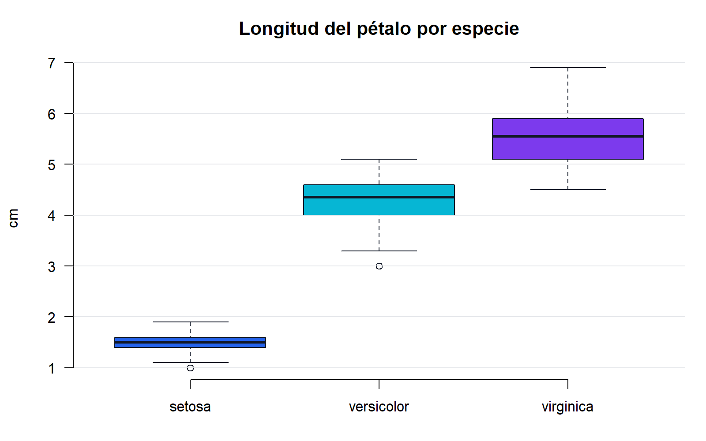

R: de cero a decisiones
Una guía completa e interactiva para dominar R de verdad — de cero a nivel profesional en análisis de datos, programación y visualización. Tres niveles, 51 módulos, ejemplos comentados, errores frecuentes, ejercicios con solución y tres proyectos integradores.
Cómo está organizada esta guía
Cada módulo sigue una metodología pedagógica progresiva pensada para que no solo leas, sino que practiques y construyas:
Elige por dónde empezar
Nivel Básico
Instalación, tipos de datos, vectores, data frames, importación y funciones. Empieza aquí si nunca has usado R.
Nivel Intermedio
Programación, tidyverse, dplyr, ggplot2, estadística, Quarto, SQL y dashboards.
Nivel Avanzado
Programación funcional, data.table, ML, series de tiempo, Shiny, Git y despliegue.
Consejo: usa el buscador (tecla /), activa el modo oscuro con el botón de la esquina superior derecha, y copia cualquier bloque de código con el botón Copiar. Tu progreso de lectura se muestra en la barra superior.
Qué necesitas
Solo un computador (Windows, macOS o Linux) y ganas de practicar. En el primer módulo instalaremos R y RStudio, ambos gratuitos y de código abierto. Todo el código de esta guía está actualizado a R 4.6 (abril 2026) y al tidyverse 2.0.
¿Qué es R y para qué sirve?
R es un lenguaje de programación y un entorno libre y gratuito, diseñado específicamente para el análisis estadístico, la ciencia de datos y la visualización. No es "un programa más de estadística": es un lenguaje completo cuya materia prima son los datos.
Un poco de historia (la justa y necesaria)
La historia de R empieza antes de R. En los años 70, John Chambers y su equipo en los Laboratorios Bell crearon S, un lenguaje pensado para que los estadísticos pudieran explorar datos de forma interactiva en lugar de escribir programas rígidos en Fortran. S fue revolucionario, pero su versión comercial (S-PLUS) era costosa y cerrada.
En 1993, Ross Ihaka y Robert Gentleman, profesores de la Universidad de Auckland (Nueva Zelanda), publicaron una implementación libre inspirada en S. La bautizaron R: por las iniciales de sus nombres y como guiño a su predecesor. En 1995 lo liberaron bajo licencia GPL (software libre) y desde 1997 lo mantiene el R Core Team, un grupo de unos veinte estadísticos y desarrolladores de élite, junto con una comunidad mundial enorme. Ese mismo año nació CRAN, el repositorio oficial de paquetes.
La versión estable más reciente es R 4.6.0 ("Because it was There", abril 2026). R publica una versión mayor cada año y parches intermedios, con una estabilidad notable: código bien escrito hace diez años suele correr hoy sin cambios.
Por qué importa la historia: R fue diseñado por estadísticos, para analizar datos. Esa herencia explica sus decisiones de diseño: la interactividad, los vectores como unidad básica y la estadística incorporada de serie. Python nació como lenguaje de propósito general y "aprendió" datos después; R nació para eso.
Qué hace único a R
- Vectorización nativa. En R operas sobre columnas enteras de datos de un solo golpe, sin escribir bucles. Es el mismo modelo mental de Excel ("aplicar la fórmula a toda la columna"), pero programable y auditable.
- Estadística de serie. Regresiones (
lm()), pruebas de hipótesis (t.test()), distribuciones y tablas de frecuencia vienen incluidas sin instalar nada. En otros lenguajes eso requiere librerías externas. - Gráficos de calidad de publicación. Con
ggplot2produces figuras listas para un informe de consultoría, un paper o un periódico. - CRAN: ~22.000 paquetes revisados. Cada paquete de CRAN pasa controles automáticos diarios en varias plataformas. Si existe una técnica estadística publicada, casi seguro hay un paquete que la implementa.
- Reportes reproducibles. Con Quarto y R Markdown, el informe y el análisis viven en el mismo documento: cambian los datos, se regenera el PDF/Word/HTML completo.
Mira la vectorización en acción con un caso típico de economía: ajustar una serie de salarios por un aumento pactado.
salarios <- c(2.4, 3.1, 1.8) # salarios en millones de pesos
salarios * 1.09 # aumento del 9% a TODOS a la vezNi un bucle, ni una celda que arrastrar: R aplicó la operación a cada elemento. Con 3 salarios o con 3 millones, el código es idéntico.
Quién usa R en el mundo real
| Sector | Para qué lo usan | Ejemplos |
|---|---|---|
| Farmacéutica y salud | Ensayos clínicos, bioestadística; la FDA ya acepta presentaciones regulatorias hechas en R | Roche, Novartis, pilotos del R Consortium ante la FDA |
| Banca y finanzas | Riesgo de crédito, pronósticos, informes regulatorios | Bancos centrales y comerciales en todo el mundo |
| Periodismo de datos | Gráficos y análisis para notas de prensa | BBC (creó su paquete bbplot para ggplot2), Financial Times |
| Academia e investigación | Econometría, ciencias sociales, ecología, epidemiología | Es el estándar de facto en papers de estadística aplicada |
| Consultoría y BI | Encuestas, tarificación, dashboards con Shiny | Firmas de consultoría económica y actuarial |
¿R o Python? Matices honestos
No es una guerra, y quien la plantee así te está vendiendo humo. Son herramientas con centros de gravedad distintos:
| Criterio | R | Python |
|---|---|---|
| Estadística y econometría | Incluida de serie, paquetes de frontera académica | Vía librerías (statsmodels, scipy), a veces con rezago |
| Visualización exploratoria | ggplot2: gramática coherente y expresiva | matplotlib/seaborn/plotly: potentes, menos uniformes |
| Reportes y comunicación | Quarto y R Markdown, muy maduros | Jupyter, excelente para explorar, menos para informes finales |
| Deep learning y producción de software | Posible, pero no es su fuerte | Claramente superior (PyTorch, ecosistema web) |
| Curva inicial para analistas | Del dato al gráfico en minutos | Requiere más "andamiaje" de programación general |
Muchos profesionales usan ambos, y de hecho conviven bien (Quarto ejecuta los dos). La conclusión práctica: si tu foco es análisis de datos, estadística y economía aplicada, R es una de las mejores inversiones de aprendizaje posibles; y lo que aprendas de lógica de datos te servirá igual si un día sumas Python.
El ecosistema: el mapa en cuatro nombres
- CRAN — el repositorio oficial de paquetes. Instalar desde ahí es tan simple como
install.packages("nombre"). - Posit (antes RStudio, PBC) — la empresa que desarrolla RStudio, Quarto y financia buena parte del tidyverse. RStudio es gratuito y de código abierto; Posit vive de productos para empresas.
- tidyverse — una colección de paquetes (
dplyr,ggplot2,tidyr,readr…) con una gramática común para manipular y visualizar datos. Lo usarás muchísimo en esta guía. - Bioconductor — repositorio especializado en bioinformática y genómica, con más de 2.000 paquetes. Si vienes de economía quizá nunca lo toques, pero explica por qué R domina en biociencias.
No intentes memorizar el ecosistema: por ahora basta con distinguir R (el lenguaje), CRAN (de dónde vienen los paquetes) y RStudio/Posit (dónde trabajas). El resto se irá acomodando solo a medida que avances.
Tu primer código, línea a línea
# Todo lo que sigue a # es un comentario: R lo ignora por completo
print("Hola, R") # imprime texto en la consola
2 + 2 # R funciona como calculadora
ventas <- c(120, 150, 90) # crea un vector con 3 valores y lo GUARDA como "ventas"
mean(ventas) # calcula el promedio del vectorDesmenucemos lo que acaba de pasar:
- Línea 1: el
#marca un comentario. R no lo ejecuta; es una nota para humanos. - Línea 2:
print()es una función: recibe algo entre paréntesis (su argumento) y hace algo con ello. El[1]de la salida indica que ese renglón empieza en el elemento 1 del resultado. - Línea 3: una expresión suelta se evalúa y se muestra. R es interactivo: pregunta y responde.
- Línea 4: aquí hay dos ideas clave.
c()combina valores en un vector, y<-(el operador de asignación) guarda el resultado con el nombreventas. Fíjate que esta línea no imprime nada: asignar es silencioso. El objeto quedó en memoria, listo para usarse. - Línea 5:
mean()recibe el vector completo y devuelve su promedio: (120 + 150 + 90) / 3 = 120.
Idea clave: en R casi todo es un vector y casi todo se hace con funciones. Interiorizar esas dos ideas hace que el resto del lenguaje encaje con naturalidad: un data frame es un conjunto de vectores, un modelo se ajusta con una función, un gráfico se construye con funciones sobre vectores.
Buenas prácticas: comenta tu código desde el día uno, explicando el porqué (no lo obvio). Cuando retomes un análisis seis meses después —o lo herede un colega— esos comentarios valdrán oro.
Sin ejecutar nada todavía, predice en papel qué devuelve cada línea: 3 * 4, sqrt(16), c(1, 2, 3) * 2 y precios <- c(100, 250). Presta especial atención a las dos últimas.
Ver solución
3 * 4 → 12. sqrt(16) → 4 (raíz cuadrada). c(1, 2, 3) * 2 → 2 4 6: R multiplica cada elemento del vector; eso es la vectorización. precios <- c(100, 250) → no imprime nada: es una asignación, el vector queda guardado en memoria con el nombre precios. Si luego escribes precios a solas, verás [1] 100 250.
Piensa en una tarea repetitiva que hoy haces en Excel (actualizar un informe mensual de ventas, recalcular un índice, limpiar la misma base cada semana). Anótala: al final del nivel básico deberías poder bosquejar cómo automatizarla en R, y será tu proyecto personal de práctica.
Instalación de R y RStudio
Necesitas dos piezas: R (el motor del lenguaje) y RStudio (la cabina desde donde lo pilotas). Son gratuitas, se instalan en ese orden y en unos 10 minutos estás listo.
La analogía del motor y la cabina no es decorativa: R es el intérprete que realmente ejecuta el código —podrías usarlo desde una terminal pelada—, mientras que RStudio es un entorno de desarrollo (IDE) que te da editor, consola, visor de gráficos y ayuda integrada. Si mañana prefirieras otra cabina (VS Code, por ejemplo), el motor seguiría siendo el mismo R. Para aprender, RStudio es la opción estándar y la que usa esta guía.
Paso 1 — Instala R (desde CRAN)
Descarga R únicamente desde cran.r-project.org, el repositorio oficial. Elige tu sistema operativo y sigue las indicaciones de su pestaña:
Ruta: Download R for Windows → base → Download R 4.6.x for Windows. Ejecuta el .exe y acepta las opciones por defecto, con una excepción importante:
- Instala en una ruta sin tildes, eñes ni espacios raros, por ejemplo
C:\R\R-4.6.0. Rutas comoC:\Users\José María\...o carpetas sincronizadas de OneDrive causan errores crípticos al instalar paquetes. - Desde R 4.2 solo existe la versión de 64 bits; si ves referencias a 32 bits en algún tutorial, es material viejo.
¿Y RTools? Es un conjunto de compiladores para Windows. No lo necesitas hoy. Solo hace falta cuando un paquete deba compilarse desde el código fuente (R te preguntará "Do you want to install from sources...?" — responde No y usará el binario precompilado). Instálalo más adelante solo si un paquete lo exige.
Primero identifica tu chip: menú Apple → Acerca de este Mac. Luego descarga el .pkg correcto desde CRAN:
- Apple Silicon (M1, M2, M3, M4…): el paquete
arm64. - Intel: el paquete
x86_64. Si instalas el de arm64 en un Mac Intel, no arrancará.
CRAN también recomienda XQuartz (xquartz.org): algunos paquetes gráficos lo usan para ciertas ventanas y dispositivos. Instálalo una vez y olvídate.
El r-base de los repos de tu distribución suele ir varias versiones atrás. Para tener R 4.6 en Ubuntu/Debian, agrega el repositorio oficial de CRAN:
# Ubuntu: agregar el repositorio de CRAN y su llave, luego instalar
sudo apt update
sudo apt install --no-install-recommends software-properties-common dirmngr
wget -qO- https://cloud.r-project.org/bin/linux/ubuntu/marutter_pubkey.asc | \
sudo tee -a /etc/apt/trusted.gpg.d/cran_ubuntu_key.asc
sudo add-apt-repository "deb https://cloud.r-project.org/bin/linux/ubuntu $(lsb_release -cs)-cran40/"
sudo apt install r-base r-base-devPara Fedora, openSUSE u otras distribuciones, sigue las instrucciones específicas en la página de CRAN para Linux. Instala también r-base-dev (o equivalente): en Linux muchos paquetes se compilan desde fuente.
Paso 2 — Instala RStudio Desktop (Posit)
Descarga RStudio Desktop (gratuito) desde posit.co e instálalo con las opciones por defecto. Al abrirse, RStudio busca y detecta automáticamente la instalación de R; no tienes que configurar nada.
Orden correcto: instala primero R y después RStudio. RStudio es solo la interfaz; no incluye el lenguaje. Si lo haces al revés, RStudio abrirá con un error de "R not found".
Para que quede claro qué aporta cada instalador:
| Instalador | Qué pone en tu equipo |
|---|---|
| R (CRAN) | El intérprete del lenguaje, los paquetes base (stats, utils, graphics…), la consola básica y Rscript para ejecutar scripts desde la terminal. |
| RStudio (Posit) | El editor con resaltado y autocompletado, los paneles integrados, el gestor de proyectos y visores de gráficos, datos y ayuda. Cero estadística: todo eso vive en R. |
Paso 3 — Verifica la instalación
Abre RStudio y escribe en la consola (el panel con el símbolo >):
R.version.string # versión instalada de R
sessionInfo() # detalle completo: plataforma, idioma, paquetes cargadosSi ves la versión 4.6.x, todo está en orden. sessionInfo() será además tu mejor aliado al pedir ayuda: pegar su salida en un foro le dice a cualquiera exactamente qué entorno tienes.
Plan B: Posit Cloud (R en el navegador)
Si trabajas en un equipo corporativo bloqueado, un computador prestado o simplemente quieres empezar ya, usa Posit Cloud: es RStudio completo corriendo en el navegador, con un plan gratuito suficiente para todo el nivel básico. Creas una cuenta, abres un "New Project" y tienes exactamente la misma interfaz que verás en la siguiente sección.
Consejo para equipos de trabajo o clase: Posit Cloud también sirve para estandarizar: todos trabajan con la misma versión de R y los mismos paquetes, sin pelear con instalaciones locales heterogéneas.
Problemas frecuentes de instalación
| Síntoma | Causa probable | Solución |
|---|---|---|
| El antivirus bloquea el instalador o borra archivos de R | Falsos positivos, comunes en equipos corporativos | Verifica que descargaste desde CRAN/Posit, agrega una exclusión para la carpeta de R o pide a TI que lo autorice |
| "Permission denied" al instalar paquetes | R instalado en una carpeta que requiere administrador | Acepta cuando R proponga crear una biblioteca personal de paquetes en tu carpeta de usuario, o reinstala R en C:\R\ |
| Errores raros con rutas que llevan tildes o espacios | Usuario de Windows tipo José María o carpetas en OneDrive | Instala R y guarda tus proyectos en rutas simples y locales (p. ej. C:\R\proyectos\) |
install.packages() no descarga nada | Proxy o firewall corporativo | Pide a TI los datos del proxy; R los acepta vía variables de entorno (http_proxy, https_proxy) |
| Un tutorial menciona "R 32 bits" o versiones 3.x | Material desactualizado | Ignóralo: desde R 4.2 solo existe 64 bits, y esta guía asume R ≥ 4.6 |
Al actualizar R en el futuro: instalar una versión mayor nueva (p. ej. pasar de 4.6 a 4.7) no migra automáticamente tus paquetes: tendrás que reinstalarlos. Es normal, ocurre una vez al año y toma unos minutos con install.packages().
Instala R y RStudio (o abre Posit Cloud) y ejecuta en la consola estas tres verificaciones: (1) R.version.string para confirmar la versión 4.6 o superior; (2) 2 + 2 para confirmar que el motor responde; (3) .libPaths() para descubrir en qué carpeta se guardarán tus paquetes.
Ver solución
Deberías ver algo como [1] "R version 4.6.0 (2026-04-24)", luego [1] 4, y en .libPaths() una o dos rutas: la biblioteca del sistema (dentro de la instalación de R) y, a veces, una biblioteca personal en tu carpeta de usuario. Si la versión es menor a 4.6, descarga de nuevo desde CRAN; si 2 + 2 no responde, revisa la tabla de problemas frecuentes.
La interfaz de RStudio
RStudio organiza tu trabajo en cuatro paneles. Entender qué hace cada uno —y cómo fluye el código entre ellos— te ahorrará horas y te dará, desde el primer día, hábitos de analista profesional.
Los cuatro paneles
| Panel | Para qué sirve | Detalle que importa |
|---|---|---|
| Source (arriba izq.) | Editor de scripts .R, documentos Quarto y visor de datos | Aquí escribes y guardas tu código. Es tu documento de trabajo permanente. Si no lo ves, abre uno con File → New File → R Script. |
| Console (abajo izq.) | Ejecuta código y muestra resultados; el intérprete de R vive aquí | El símbolo > significa "listo para recibir". Si ves +, R espera que termines una expresión incompleta (te faltó cerrar un paréntesis): presiona Esc para cancelar. |
| Environment / History (arriba der.) | Objetos en memoria (vectores, data frames, funciones) e historial de comandos | Es tu "radiografía de la memoria": si un objeto no aparece aquí, no existe. Un data frame muestra sus dimensiones (p. ej. 500 obs. of 8 variables) y se puede inspeccionar con clic. |
| Files / Plots / Packages / Help (abajo der.) | Archivos del proyecto, gráficos, paquetes instalados y documentación | La pestaña Help es oro: ?mean en la consola abre ahí la documentación oficial de la función mean(). |
El flujo de trabajo real
Los paneles no son cuatro compartimentos aislados: forman un circuito por el que tu código fluye. El ciclo que repetirás cientos de veces al día es:
- 1. Escribes una o varias líneas en el Source (el script).
- 2. Ejecutas la línea donde está el cursor con Ctrl+Enter (no hace falta seleccionarla).
- 3. Observas el resultado en la Console.
- 4. Si asignaste algo con
<-, el objeto aparece en Environment; si graficaste, la figura aparece en Plots. - 5. Corriges o continúas en el script, y vuelta a empezar.
# Escribe esto en un script (Source) y ejecútalo línea a línea con Ctrl+Enter
ipc_mensual <- c(0.62, 0.45, 0.71, 0.38) # variación % del IPC, ene-abr
mean(ipc_mensual) # promedio mensual
sum(ipc_mensual) # inflación acumulada aproximadaTras la primera línea, mira el panel Environment: verás ipc_mensual con sus cuatro valores. Ese es el circuito completo: Source → Console → Environment.
Por qué nunca trabajar solo en la consola
La consola es una conversación efímera: lo que escribes ahí se pierde al cerrar la sesión. El script es el documento: la receta completa y reproducible de tu análisis. La regla profesional es simple: la consola es para probar; el script es la verdad. Todo lo que quieras conservar —cargar datos, limpiar, calcular, graficar— debe vivir en el script, de modo que ejecutarlo de arriba abajo reproduzca el análisis entero. Cuando un cliente te pida "el mismo informe pero con los datos de este trimestre", cambiarás el archivo de entrada, correrás el script y listo. Si hubieras trabajado en la consola, tocaría reconstruir todo de memoria.
Señal de alerta: si llevas más de dos o tres comandos "buenos" escritos directamente en la consola, detente y pásalos a un script. Un resultado que no puedes reproducir es un resultado que no tienes.
Proyectos de RStudio (.Rproj): tu unidad de trabajo
Un Proyecto (File → New Project → New Directory) es una carpeta que RStudio trata como unidad autocontenida, marcada con un archivo .Rproj. El beneficio central es el directorio de trabajo: al abrir el proyecto, R se sitúa automáticamente en esa carpeta, así que puedes leer datos con rutas relativas como "datos/ventas.csv" en lugar de rutas absolutas como "C:/Users/luis/Documents/consultoria/cliente/datos/ventas.csv".
¿Por qué importa tanto? Portabilidad. La ruta absoluta solo existe en tu máquina; la relativa funciona en la de tu colega, en el servidor del cliente y en Posit Cloud. Comprimes la carpeta del proyecto, la envías, y el análisis corre tal cual. Además, cada proyecto mantiene su propio historial y sesión, de modo que puedes alternar entre el proyecto del cliente A y el del cliente B sin que se contaminen.
Buena práctica desde el inicio: un análisis = un proyecto. Y evita setwd() con rutas absolutas: es la forma clásica de escribir código que solo funciona en tu computador. El proyecto resuelve el directorio de trabajo por ti.
Atajos imprescindibles
| Atajo (Win/Linux) | macOS | Acción |
|---|---|---|
| Ctrl+Enter | Cmd+Enter | Ejecutar la línea o selección actual |
| Alt+- | Option+- | Insertar <- (asignación) |
| Ctrl+Shift+M | Cmd+Shift+M | Insertar el pipe |> / %>% |
| Ctrl+Shift+C | Cmd+Shift+C | Comentar / descomentar las líneas seleccionadas |
| Ctrl+Shift+R | Cmd+Shift+R | Insertar un encabezado de sección en el script |
| Ctrl+Shift+F10 | Cmd+Shift+F10 | Reiniciar la sesión de R (borrón y cuenta nueva) |
| Ctrl+L | Cmd+L | Limpiar la consola (no borra objetos, solo el texto) |
| F1 sobre una función | F1 | Abrir su ayuda en el panel Help |
| Alt+Shift+K | Option+Shift+K | Ver el mapa completo de atajos |
Autocompletado con Tab: escribe las primeras letras de una función u objeto y presiona Tab: RStudio sugiere nombres, muestra los argumentos de la función y hasta un extracto de su ayuda. Escribe mea + Tab y lo verás. Dentro de los paréntesis de una función, Tab sugiere los nombres de los argumentos. Úsalo siempre: evita errores de tipeo y te enseña la firma de las funciones sobre la marcha.
Configuración recomendada (y el porqué)
En Tools → Global Options → General, haz dos cambios:
- Desmarca "Restore .RData into workspace at startup".
- Pon "Save workspace to .RData on exit" en Never.
El porqué: con la opción activada, R guarda todos tus objetos al salir y los restaura al abrir. Suena cómodo, pero es una trampa: tu análisis pasa a depender de un estado oculto acumulado durante semanas —objetos que ya no sabes cómo se crearon— y el día que cambies de máquina, nada funcionará. Al desactivarlo, te obligas a que el script contenga todo lo necesario para reconstruir el análisis desde cero. Es el hábito número uno de la reproducibilidad.
Complemento del hábito: reinicia la sesión con frecuencia (Ctrl+Shift+F10) y vuelve a correr tu script desde arriba. Si algo falla tras el reinicio, descubriste una dependencia oculta a tiempo, y no la víspera de la entrega.
Personalización: que sea tu espacio
En Tools → Global Options → Appearance puedes elegir un tema oscuro (muchos usan Tomorrow Night o similares para sesiones largas), aumentar el tamaño de la fuente y cambiar la tipografía (una fuente monoespaciada como Fira Code o JetBrains Mono mejora la legibilidad del código). En Pane Layout puedes reubicar los paneles si prefieres, por ejemplo, la consola a la derecha. Nada de esto cambia cómo se ejecuta el código; sí cambia cuántas horas aguantan tus ojos.
Crea un proyecto llamado practica-r (File → New Project → New Directory). Dentro, crea un script 01_exploracion.R con estas líneas: gastos <- c(450, 320, 610, 280), mean(gastos) y max(gastos). Ejecútalas una a una con Ctrl+Enter y responde: ¿qué apareció en Environment y qué mostró la consola en cada paso?
Ver solución
Tras la primera línea, la consola no imprime nada (es una asignación), pero en Environment aparece gastos con sus cuatro valores. mean(gastos) imprime [1] 415 y max(gastos) imprime [1] 610; ninguna de las dos crea objetos nuevos porque no usaste <-, así que Environment sigue mostrando solo gastos. Ese contraste —asignar guarda en silencio, evaluar imprime sin guardar— es la mecánica esencial de R.
Deja tu RStudio listo para trabajar en serio: desactiva el guardado de .RData, elige tema y tamaño de fuente, y verifica con Alt+Shift+K que ubicas los atajos de ejecutar, asignar e insertar pipe. Cierra RStudio, reábrelo desde el archivo practica-r.Rproj y confirma que Environment arranca vacío: esa pantalla limpia es tu nueva normalidad.
Tipos de datos
Todo valor en R pertenece a un tipo, y el tipo decide qué operaciones son válidas: puedes sumar dos números, pero no un número y un texto. Dominar el sistema de tipos es la vacuna contra la mitad de los errores que verás en análisis de datos reales.
El modelo mental: el tipo decide las reglas del juego
Piensa en el tipo como el "documento de identidad" de cada dato: le dice a R qué se puede hacer con él. Un salario almacenado como número (2450000) se puede promediar; el mismo salario almacenado como texto ("2.450.000", típico de un Excel mal exportado) no. Cuando un cálculo falla o da un resultado absurdo, la primera pregunta siempre es: ¿de qué tipo son mis datos?
| Tipo | Ejemplo | Qué guarda | Uso típico en análisis |
|---|---|---|---|
double (alias numeric) | 3.14, 2450000, -0.075 | Números reales con decimales (64 bits). Es el tipo por defecto de cualquier número que escribas. | Salarios, tasas, precios, IPC. |
integer | 5L, 2024L | Enteros exactos. La L fuerza el tipo entero; sin ella, 5 es double. | Conteos, años, número de hijos en una encuesta. |
character | "Magdalena", 'texto' | Cadenas de texto, entre comillas dobles o simples. | Nombres de departamentos, códigos DANE, respuestas abiertas. |
logical | TRUE / FALSE | Valores booleanos: verdadero o falso. | Filtros (¿salario > mínimo?), variables dummy. |
complex | 2+3i | Números complejos. | Muy raro fuera de matemática avanzada. |
raw | as.raw(255) | Bytes crudos. | Casi nunca lo verás en análisis de datos. |
¿Por qué "numeric" y "double" parecen lo mismo? Históricamente R llama numeric a la clase y double al tipo interno (doble precisión de 64 bits). En la práctica son dos nombres para la misma cosa; class(3.14) dice "numeric" y typeof(3.14) dice "double".
integer vs. double: ¿por qué 0.1 + 0.2 no es 0.3?
Los double se almacenan en binario con precisión finita, y muchos decimales (como 0.1) no tienen representación binaria exacta, igual que 1/3 no tiene representación decimal exacta. El resultado: errores minúsculos que rompen comparaciones exactas.
0.1 + 0.2 == 0.3 # ¡sorpresa!
print(0.1 + 0.2, digits = 20) # lo que R guarda en realidad
print(0.3, digits = 20)
sqrt(2)^2 == 2 # mismo fenómeno
sqrt(2)^2 - 2 # el error es diminuto, pero existeLos integer, en cambio, son exactos, pero tienen techo: el máximo es .Machine$integer.max (2 147 483 647, unos 2,1 mil millones). Para montos monetarios grandes o el PIB en pesos, usa double: pierde exactitud teórica en decimales, pero maneja magnitudes enormes sin desbordarse.
.Machine$integer.max
2147483647L + 1L # desbordamiento de enteros
2147483647 + 1 # como double no hay problemaNunca compares decimales con ==: el error de punto flotante no es un bug de R, es una limitación de todo computador (le pasa igual a Python, Excel y Stata). En la sección de operadores verás las alternativas correctas: all.equal() y dplyr::near().
typeof() vs. class(): dos preguntas distintas
typeof() pregunta "¿cómo está guardado esto en memoria?" (el tipo base). class() pregunta "¿cómo debe comportarse este objeto?" (la etiqueta que usan las funciones para decidir qué hacer con él). Para valores simples suelen coincidir, pero en objetos más ricos se separan.
typeof(3.14); class(3.14) # double / numeric
typeof(5L); class(5L) # integer / integer
typeof(TRUE); class(TRUE) # logical / logical
# Donde se separan: una fecha se GUARDA como número
# (días desde 1970-01-01) pero se COMPORTA como fecha
hoy <- Sys.Date()
typeof(hoy)
class(hoy)Coerción implícita: la jerarquía que R aplica sin avisar
Un vector en R solo puede contener un tipo. Si mezclas tipos, R no protesta: convierte ("promueve") todo al tipo más flexible siguiendo una jerarquía fija, siempre en la dirección que no pierde información:
| Jerarquía | logical | → integer | → double | → character |
|---|---|---|---|---|
| Ejemplo de promoción | TRUE | 1L | 1 | "1" |
| Por qué | Todo TRUE es un 1 válido | Todo entero es un double válido | Todo double se puede escribir como texto | El texto lo admite todo (y no se devuelve) |
c(TRUE, 1L) # logical + integer -> integer
c(1L, 2.5) # integer + double -> double
c(1, "dos") # double + character -> character (¡adiós cálculos!)
# La coerción útil: TRUE vale 1, FALSE vale 0
supera_minimo <- c(TRUE, FALSE, TRUE, TRUE, FALSE)
sum(supera_minimo) # cuántos superan el salario mínimo
mean(supera_minimo) # proporción que lo superaTruco de analista: sum() sobre un vector lógico cuenta los TRUE y mean() calcula la proporción. mean(salarios > 2000000) te da directamente el porcentaje de personas que ganan más de dos millones, sin filtrar ni contar a mano.
Coerción explícita: las funciones as.*()
Cuando la conversión la decides tú, usa la familia as.*(). Si la conversión es imposible, R no inventa: devuelve NA y (en el caso numérico) te lo advierte.
as.numeric("3.5") # texto que "parece número": funciona
as.integer(3.9) # ¡trunca, no redondea!
as.character(100) # número a texto
as.logical(0) # 0 es FALSE, cualquier otro número es TRUE
as.numeric("no disp.") # imposible -> NA con warning
as.logical("hola") # imposible -> NA (este SIN warning)Buena práctica: al importar datos, si una columna que debería ser numérica llega como character, es señal de que trae basura (texto como "N/D", separadores de miles, símbolos de peso). Antes de aplicar as.numeric() a ciegas, inspecciona con unique() qué valores la están contaminando: cada warning de coerción es un dato que se convierte en NA silenciosamente.
Valores especiales: NA, NULL, NaN e Inf
R distingue con precisión cuatro formas de "aquí no hay un número normal". Confundirlas es fuente clásica de errores:
| Valor | Significa | Ejemplo típico | Se detecta con |
|---|---|---|---|
NA | Dato faltante: la observación existe, el valor no se conoce. | Encuestado que no reporta su ingreso. | is.na(x) |
NULL | Ausencia de objeto: no hay nada, ni siquiera un hueco. Longitud cero. | Resultado de una lista sin ese elemento. | is.null(x) |
NaN | "Not a Number": operación matemática indefinida. | 0/0, Inf - Inf, log(-1). | is.nan(x) |
Inf / -Inf | Infinito: desbordamiento o división por cero. | 1/0, log(0) da -Inf. | is.infinite(x), is.finite(x) |
# Ingresos de una encuesta: el tercero no respondió
ingresos <- c(1300000, 2450000, NA, 3100000, 1800000)
mean(ingresos) # NA contamina todo el cálculo
mean(ingresos, na.rm = TRUE) # promedio ignorando faltantes
sum(is.na(ingresos)) # cuántos faltantes hay
which(is.na(ingresos)) # en qué posición están
# NULL desaparece; NA ocupa su lugar
length(c(1, NULL, 3)) # NULL no cuenta
length(c(1, NA, 3)) # NA sí ocupa posición
# NaN e Inf en cálculos
0 / 0; 1 / 0; log(0)
is.finite(c(1.5, Inf, NA, NaN)) # solo el primero es "número usable"Error frecuente: comparar con NA usando ==. x == NA siempre devuelve NA, nunca TRUE o FALSE, porque R razona: "si no sé cuánto vale, tampoco sé si es igual". Usa siempre is.na(x). Detalle sutil: is.na(NaN) es TRUE (todo NaN cuenta como faltante), pero is.nan(NA) es FALSE.
Por último, NA tiene tipo. El NA "a secas" es lógico (typeof(NA) devuelve "logical"), y existen versiones tipadas: NA_integer_, NA_real_ y NA_character_. Las necesitarás en funciones estrictas con los tipos, como dplyr::if_else(), que exige que ambas ramas devuelvan el mismo tipo: if_else(ingreso > 0, ingreso, NA_real_).
Sin ejecutar nada, predice el tipo de c(1L, 2.5), de c(TRUE, 3), de c(FALSE, 2L) y de c(1, "dos"). Luego verifícalo con typeof(). ¿Qué regla siguió R en cada caso?
Ver solución
c(1L, 2.5) → double (el entero se promueve). c(TRUE, 3) → double (TRUE pasa a valer 1). c(FALSE, 2L) → integer (lo lógico sube solo un escalón). c(1, "dos") → character. En todos los casos R aplicó la jerarquía logical → integer → double → character, promoviendo siempre hacia el tipo más flexible para no perder información.
Tienes tasas <- c(0.045, NA, 0.098, NaN, Inf, 0.032) con tasas de interés mal digitadas. Calcula: (a) cuántos valores son faltantes según is.na(), (b) cuántos son utilizables (finitos), y (c) el promedio usando solo los valores finitos.
Ver solución
tasas <- c(0.045, NA, 0.098, NaN, Inf, 0.032)
sum(is.na(tasas)) # 2: el NA y el NaN (is.na cubre ambos)
sum(is.finite(tasas)) # 3: solo 0.045, 0.098 y 0.032
mean(tasas[is.finite(tasas)]) # 0.05833333Nota que na.rm = TRUE no habría bastado: elimina NA y NaN, pero deja pasar Inf y el promedio daría Inf. is.finite() es el filtro completo.
Variables y objetos
Una variable no es una caja que contiene un valor: es una etiqueta pegada sobre un objeto. En R todo lo que creas (un número, una tabla, un modelo de regresión) es un objeto, y los nombres son la forma de encontrarlo después.
Asignación: cuatro formas, una convención
salario <- 2500000 # el operador idiomático de R
ipc = 5.2 # válido, pero se reserva para otro uso
0.0925 -> tasa_interes # asignación hacia la derecha (rara)
assign("anio_base", 2018) # asignación programática (avanzado)
salario
tasa_interes¿Por qué <- y no =? Ambos asignan, pero la comunidad reserva = para pasar argumentos a funciones: en mean(x, na.rm = TRUE), ese = no crea ninguna variable na.rm. Usar <- para variables y = para argumentos hace el código legible de un vistazo: sabes qué es una asignación y qué es un argumento. Atajo en RStudio: Alt+-.
Qué pasa por dentro: nombres que apuntan a objetos
Cuando escribes salario <- 2500000, R crea el objeto 2500000 en memoria y le pega la etiqueta salario. Si luego escribes salario_nuevo <- salario, no se duplica nada todavía: ambas etiquetas apuntan al mismo objeto. Solo cuando modificas uno de los dos, R hace una copia (copy-on-modify). Consecuencia práctica: modificar una "copia" jamás altera el original.
salario <- 2500000
salario_nuevo <- salario # segunda etiqueta al mismo valor
salario_nuevo <- salario_nuevo * 1.12 # aumento del 12%
salario # el original queda intacto
salario_nuevo # solo cambió la etiqueta que modificasteModelo mental: las variables son etiquetas sobre objetos, no cajas con cosas dentro. Un mismo objeto puede tener varias etiquetas, y arrancar una etiqueta (rm()) no destruye las demás. Este modelo te salvará cuando trabajes con data frames grandes: pasar una tabla a una función no la copia hasta que la función intente modificarla.
Reglas para nombrar (y qué está prohibido)
- Un nombre válido empieza por letra (o punto no seguido de número) y solo contiene letras, números,
.y_. Por esoipc_2024sirve y2024_ipcno. - R distingue mayúsculas:
Edad,edadyEDADson tres variables distintas (y una fuente clásica de "object not found"). - Las palabras reservadas no se pueden usar como nombre:
if,else,for,while,function,TRUE,FALSE,NULL,NA,Inf,NaN… IntentarTRUE <- 1produce un error inmediato. - Con comillas invertidas puedes crear nombres "ilegales" como
`tasa de interés`, pero tendrás que escribir las comillas cada vez. Evítalo.
TRUE <- 1 # las palabras reservadas están blindadas
T <- 0 # ...pero sus atajos T y F ¡NO lo están!Cuidado con T y F: son solo variables que por defecto valen TRUE y FALSE, y cualquiera (tú incluido) puede sobrescribirlas: T <- 0 es legal y a partir de ahí todo código que use T queda corrupto. Escribe siempre TRUE y FALSE completos.
Estilo: snake_case y nombres que se explican solos
La guía de estilo del tidyverse —el estándar de facto— recomienda snake_case: minúsculas y palabras separadas por _. Un buen nombre le ahorra un comentario al lector:
| Nombre problemático | Por qué falla | Versión recomendada |
|---|---|---|
x, temp, datos2 | No dicen qué contienen; en dos semanas ni tú lo recordarás. | ingreso_mensual, encuesta_limpia |
IngresoMensual | CamelCase funciona, pero rompe la convención del ecosistema. | ingreso_mensual |
tasa.desempleo | El punto es legal, pero en R tiene significado técnico (métodos S3); confunde. | tasa_desempleo |
mean, data, c, df | Pisan nombres de funciones de R base y siembran confusión. | ingreso_promedio, datos_ipc |
SalarioEnPesosColombianosDelAnio2024 | Descriptivo, pero inescribible. | salario_cop_2024 |
El entorno global: tu mesa de trabajo
Cada variable que creas en la consola vive en el entorno global (lo que RStudio muestra en el panel Environment). Puedes listarlo, consultarlo y limpiarlo:
ls() # lista los objetos creados
exists("salario") # ¿existe un objeto con ese nombre?
rm(anio_base) # elimina un objeto
rm(list = ls()) # borra TODO el entorno (irreversible)Sobrescritura silenciosa: R jamás avisa cuando reutilizas un nombre. Si calculas total <- sum(ventas_2023) y doscientas líneas después escribes total <- sum(ventas_2024), la primera cifra desaparece sin ruido y cualquier código posterior que asuma el valor viejo produce resultados incorrectos sin ningún error. Es de los bugs más difíciles de cazar: usa nombres específicos (total_2023, total_2024) y ejecuta tus scripts de arriba abajo en un entorno limpio.
Radiografía de un objeto: las funciones de inspección
Antes de operar con un objeto desconocido, interrógalo. Estas cinco funciones son tu kit de diagnóstico:
salarios <- c(gerencia = 8500000, analista = 3200000, asistente = 1750000)
str(salarios) # estructura compacta: tipo, dimensión y primeros valores
class(salarios) # cómo se comporta
typeof(salarios) # cómo se guarda
length(salarios) # cuántos elementos tiene
attributes(salarios) # metadatos adjuntos (aquí, los nombres)Hábito de oro: str() es la primera función que deberías aplicar a cualquier dato recién importado. En una sola línea por columna te muestra tipos, dimensiones y una muestra de valores: detecta al instante la columna de salarios que llegó como texto o el año que llegó como decimal.
Crea salario_nominal = 2 800 000 e inflacion = 0.052 (5,2 % anual). Calcula el salario real como salario_nominal / (1 + inflacion), guárdalo en salario_real e imprímelo. Luego verifica con ls() que las tres variables existen y con typeof() que todas son double.
Ver solución
salario_nominal <- 2800000
inflacion <- 0.052
salario_real <- salario_nominal / (1 + inflacion)
salario_real
ls()
typeof(salario_real)El salario real (~2 661 597) muestra cuánto poder adquisitivo conserva el nominal tras un año de inflación del 5,2 %.
Predice qué imprime este código y explica por qué, usando el modelo de etiquetas: a <- 100; b <- a; a <- 50; b
Ver solución
Imprime 100. Cuando ejecutas b <- a, la etiqueta b queda apuntando al valor que a tenía en ese momento (100). Reasignar a <- 50 solo mueve la etiqueta a hacia un objeto nuevo; no toca el objeto al que apunta b. Las variables no quedan "conectadas" entre sí: la asignación copia la referencia al valor actual, no crea un vínculo permanente.
Operadores
Los operadores son los verbos del lenguaje: calculan, comparan y combinan condiciones. Aquí están todos, incluidos los dos que casi nadie explica bien (%% y %in%) y las tres trampas que tarde o temprano muerden a todo analista.
7 + 3 # 10 suma
7 - 3 # 4 resta
7 * 3 # 21 multiplicación
7 / 3 # 2.333333 división (siempre devuelve double)
7 %% 3 # 1 módulo: el RESTO de dividir 7 entre 3
7 %/% 3 # 2 división entera: el cociente sin decimales
2 ^ 3 # 8 potenciaEl módulo %% es el más subestimado del grupo. Tres usos reales:
# 1) Pares e impares: el resto entre 2 es 0 o 1
c(2020, 2021, 2022, 2023) %% 2 == 0
# 2) Ciclos: convertir mes acumulado en mes calendario (1-12)
mes_acumulado <- c(13, 18, 24, 25)
(mes_acumulado - 1) %% 12 + 1
# 3) Descomponer números: último dígito y "el resto"
codigo <- 4589
codigo %% 10 # último dígito (útil para dígitos de verificación)
codigo %/% 10 # el número sin su último dígitoY %/% brilla para agrupar: (mes - 1) %/% 3 + 1 convierte cualquier mes en su trimestre.
5 == 5 # TRUE igualdad (doble ==, no confundir con =)
5 != 3 # TRUE distinto
5 > 3 # TRUE mayor que
5 <= 2 # FALSE menor o igual
"a" < "b" # TRUE los textos se comparan alfabéticamente
# Las comparaciones son vectorizadas: comparan elemento a elemento
salarios <- c(1300000, 2450000, 3100000, 1800000)
salarios > 2000000La trampa de este grupo: == con decimales. Por la precisión de punto flotante que viste en tipos de datos, dos cálculos "iguales en papel" pueden diferir en la posición 16:
1.1 - 0.7 == 0.4 # FALSE, aunque duela
all.equal(1.1 - 0.7, 0.4) # TRUE: compara con tolerancia
isTRUE(all.equal(1.1 - 0.7, 0.4)) # forma segura para usar en if
dplyr::near(1.1 - 0.7, 0.4) # equivalente vectorizado del tidyverseTRUE & FALSE # FALSE Y vectorizado: ambas deben cumplirse
TRUE | FALSE # TRUE O vectorizado: basta con una
!TRUE # FALSE negación
xor(TRUE, TRUE) # FALSE O exclusivo: una u otra, pero no ambas
# En filtros de datos, & y | trabajan elemento a elemento
edad <- c(17, 25, 34, 68)
ocupado <- c(FALSE, TRUE, TRUE, FALSE)
edad >= 18 & ocupado # población ocupada en edad de trabajarLas versiones dobles && y || son escalares: exigen un único valor a cada lado y se usan en condiciones de if. Además cortocircuitan: si el lado izquierdo ya decide el resultado, el derecho ni se evalúa.
(5 > 3) && (2 < 4) # TRUE: ambas condiciones escalares
# Cortocircuito como guardián: si x es NULL, x > 0 nunca se evalúa
x <- NULL
!is.null(x) && x > 0 # FALSE sin error; con & habría fallado
# Desde R 4.3, && con vectores de longitud > 1 es ERROR (antes
# usaba silenciosamente el primer elemento: peor)
c(TRUE, FALSE) && TRUE%in% pregunta si cada elemento de la izquierda está en el conjunto de la derecha. Es el reemplazo elegante de cadenas interminables de == unidas con |:
depto <- c("Magdalena", "Antioquia", "Atlántico", "Bolívar", "Cesar")
# Torpe y frágil:
depto == "Magdalena" | depto == "Atlántico" | depto == "Bolívar"
# Claro y escalable:
depto %in% c("Magdalena", "Atlántico", "Bolívar")
# Bonus: %in% trata los NA con sensatez, == no
ingresos_na <- c(100, NA, 300)
ingresos_na == 100 # el NA se propaga
ingresos_na %in% 100 # %in% responde TRUE/FALSE siempreRegla práctica: si vas a comparar contra dos o más valores, o si tu vector puede traer NA, usa %in%. En filtros de datos (la región Caribe, los meses del trimestre, los códigos CIIU de interés) es el operador que más usarás.
Una vs. dos: & y | operan elemento a elemento sobre vectores (para filtrar datos); && y || devuelven un único valor y se usan en condicionales if. Desde R 4.3, aplicar && o || a vectores de longitud mayor que 1 produce un error, lo cual es una bendición: antes tomaba el primer elemento en silencio y ocultaba bugs.
Error clásico: usar = en lugar de ==. x = 5 asigna; x == 5 compara. Dentro de un if, el primero suele dar error de sintaxis, pero dentro de una llamada a función puede colarse como argumento y producir comportamientos desconcertantes.
Precedencia: por qué -2^2 es -4
Cuando una expresión mezcla operadores, R los aplica en un orden fijo, no de izquierda a derecha. De mayor a menor prioridad:
| Prioridad | Operadores | Ejemplo |
|---|---|---|
| 1 (máxima) | ^ | 2^3^2 = 512 (además asocia por la derecha: 2^(3^2)) |
| 2 | -, + unarios (signo) | -2^2 = −4, porque es -(2^2) |
| 3 | : (secuencias) | 1:3*2 = 2 4 6, es (1:3)*2 |
| 4 | %%, %/%, %in%, |> | 10 %% 3 * 2 = 2 |
| 5 | *, / | 2 + 3 * 4 = 14 |
| 6 | +, - binarios | 1:5 - 1 = 0 1 2 3 4 (¡no 1:4!) |
| 7 | <, >, <=, >=, ==, != | 2 + 2 == 4 es (2+2) == 4 |
| 8 | ! | !x == 5 es !(x == 5), no (!x) == 5 |
| 9 | &, && | el Y se evalúa antes que el O |
| 10 | |, || | a & b | c es (a & b) | c |
| 11 (mínima) | <-, = | la asignación ocurre al final |
-2^2 # -4: la potencia se calcula ANTES que el signo
(-2)^2 # 4: el paréntesis fuerza el orden que querías
1:5 - 1 # 0 1 2 3 4: primero la secuencia, luego la resta
1:(5 - 1) # 1 2 3 4: lo que probablemente buscabasBuena práctica: no memorices la tabla completa: cuando una expresión combine tres o más operadores, usa paréntesis aunque sean redundantes. ((anio %% 4) == 0) & ((anio %% 100) != 0) se lee sin esfuerzo y elimina toda ambigüedad, para R y para el colega que herede tu código.
Comparar dinero: si trabajas con cifras monetarias que arrastran multiplicaciones por tasas (intereses, deflactores, TRM), asume que == te fallará en algún momento. Para verificar que una conciliación cuadra, prefiere abs(a - b) < 0.01 (tolerancia de un centavo) o dplyr::near(a, b, tol = 0.01).
¿Es 2025 bisiesto? Un año es bisiesto si es divisible por 4 y, además, no es divisible por 100 o sí lo es por 400. Escríbelo como una sola expresión lógica con %% y pruébala también con 2000 y 1900 (el primero es bisiesto; el segundo no).
Ver solución
anio <- c(2025, 2000, 1900)
(anio %% 4 == 0) & (anio %% 100 != 0 | anio %% 400 == 0)2025 no es divisible por 4; 2000 pasa por la regla del 400; 1900 es divisible por 100 pero no por 400, así que queda excluido. Nota que al ser una expresión vectorizada (con & y |, no &&), evaluó los tres años de una sola vez.
Tienes meses <- 1:12. Usando solo operadores de esta sección: (a) obtén un vector lógico que marque los meses del primer semestre, (b) calcula el trimestre de cada mes con %/%, y (c) marca con %in% los meses de la "temporada alta" turística (1, 6, 7, 12).
Ver solución
meses <- 1:12
meses <= 6 # (a) primer semestre
(meses - 1) %/% 3 + 1 # (b) trimestre
meses %in% c(1, 6, 7, 12) # (c) temporada altaSin ejecutarlo, predice el resultado de -1:3^2 %% 2 == 0 | FALSE. Descomponlo operador por operador usando la tabla de precedencia y luego verifícalo en la consola. Pista: ^ va primero, después :... y el - unario se aplica antes que :, así que la secuencia es (-1):9.
Vectores
El vector es LA estructura central de R: una secuencia ordenada de valores del mismo tipo. No es una estructura más entre varias: en R todo lo demás (matrices, factores, data frames) se construye sobre vectores. Entender vectores es, literalmente, entender R.
Aquí va el modelo mental clave: en R no existen los escalares. Cuando escribes 5, R lo trata como un vector numérico de longitud 1. Por eso al imprimirlo ves [1] 5: ese [1] te dice "este es el elemento en la posición 1". Toda función de R está diseñada pensando en vectores, y eso explica por qué el lenguaje se siente tan natural para análisis de datos: una columna de ventas, una serie de precios o las respuestas de una encuesta son vectores.
Crear vectores: c(), secuencias y repeticiones
La función c() (de combine) es la más usada de todo R. Pero para secuencias regulares hay herramientas más expresivas:
ventas <- c(150, 172, 168, 195) # c() = combinar valores
1:6 # secuencia entera de 1 en 1
seq(0, 1, by = 0.25) # controlas el paso
seq(0, 100, length.out = 5) # controlas cuántos elementos
seq_len(4) # 1 2 3 4 (seguro para bucles)
seq_along(ventas) # 1 2 3 4 (un índice por elemento)Para repetir valores, rep() tiene dos argumentos que la gente confunde: times repite el bloque completo; each repite cada elemento antes de pasar al siguiente. Compáralos lado a lado:
rep(c("T1", "T2"), times = 3) # el bloque entero, 3 veces
rep(c("T1", "T2"), each = 3) # cada elemento, 3 veces seguidas
rep(c("A", "B"), times = c(2, 4)) # repeticiones distintas por elementoseq_along() te salvará más adelante: cuando escribas bucles, usa for (i in seq_along(x)) en lugar de for (i in 1:length(x)). Si x está vacío, 1:length(x) produce 1 0 (¡el bucle corre dos veces con índices inválidos!), mientras que seq_along(x) produce un vector vacío y el bucle no corre. Es la diferencia entre un script robusto y un bug silencioso.
Las 5 formas de indexar (¡empieza en 1!)
Indexar es pedirle al vector un subconjunto usando corchetes [ ]. Dominar las cinco formas es esencial porque son exactamente las mismas que luego usarás con matrices y data frames:
ventas <- c(ene = 150, feb = 172, mar = 168, abr = 195)
ventas[1] # 1. posición positiva: "dame el elemento 1"
ventas[c(2, 4)] # ...o varios a la vez
ventas[-1] # 2. posición negativa: "todo MENOS el 1"
ventas[ventas > 165] # 3. condición lógica: "los que cumplen"
ventas["mar"] # 4. por nombre
which(ventas > 165) # 5. which(): ¿en qué POSICIONES se cumple?La indexación lógica merece que te detengas un momento: ventas > 165 produce el vector FALSE TRUE TRUE TRUE, y al usarlo dentro de [ ] R conserva solo las posiciones con TRUE. Este patrón —construir una condición y filtrar con ella— es el corazón de todo filtro de datos que harás en tu vida con R, incluido el filter() del tidyverse.
Error muy común: en R los índices empiezan en 1, no en 0 (a diferencia de Python o C). v[0] no da error: devuelve un vector vacío de longitud 0, lo cual es peor porque el bug pasa desapercibido. Y pedir una posición que no existe, como v[10] en un vector de 4, devuelve NA sin quejarse.
Vectores con nombres: names(ventas) devuelve "ene" "feb" "mar" "abr", y también puedes asignar nombres después con names(v) <- c(...). Un vector con nombres funciona como un mini diccionario: es la forma más simple de asociar etiqueta y valor sin necesitar todavía un data frame.
Vectorización: el superpoder de R
En la mayoría de lenguajes, para aplicar el IVA a 4 precios escribirías un bucle. En R, las operaciones actúan sobre todo el vector a la vez. Compara el mismo cálculo de las dos formas:
precios <- c(100, 250, 80, 120)
con_iva <- numeric(length(precios)) # vector vacío del tamaño correcto
for (i in seq_along(precios)) {
con_iva[i] <- precios[i] * 1.19
}
con_ivaprecios <- c(100, 250, 80, 120)
con_iva <- precios * 1.19 # una sola línea, sin índices, sin bucle
con_ivaMismo resultado, pero la versión vectorizada es más corta, más legible y mucho más rápida: el "bucle" ocurre internamente en código C compilado, no en R. El porqué importa: cuando pienses "necesito hacer X a cada elemento", tu primer reflejo en R no debe ser un bucle, sino preguntarte si la operación ya es vectorizada. Casi siempre lo es: +, *, sqrt(), log(), round(), comparaciones, paste()... todas trabajan elemento a elemento.
costos <- c(80, 190, 60, 95)
margen <- precios - costos # operación entre dos vectores, par a par
margen
margen / precios * 100 # margen porcentual de cada productoReciclaje: la regla y el peligro
¿Qué pasa si operas dos vectores de distinta longitud? R recicla el más corto: lo repite hasta alcanzar la longitud del largo. Es lo que hace que precios * 1.19 funcione (el 1.19, vector de longitud 1, se recicla 4 veces). La regla: si la longitud mayor es múltiplo exacto de la menor, R recicla en silencio; si no lo es, recicla igual pero emite una advertencia.
c(1, 2, 3, 4) + c(10, 20) # 4 es múltiplo de 2: recicla sin avisar
c(1, 2, 3) + c(10, 20) # 3 NO es múltiplo de 2: recicla Y advierteEl peligro real del reciclaje no es la advertencia, sino el caso en que NO hay advertencia. Si sumas un vector de 12 meses con uno de 4 trimestres por accidente, las longitudes encajan (12 es múltiplo de 4), R no dice nada y obtienes números plausibles pero incorrectos. Ante resultados sospechosos, verifica longitudes con length().
Funciones esenciales de resumen y orden
| Función | Qué hace | Ejemplo con x <- c(30, 10, 20) |
|---|---|---|
sum(x) / mean(x) | Suma / promedio | 60 / 20 |
cumsum(x) | Suma acumulada | 30 40 60 |
diff(x) | Diferencias consecutivas | -20 10 |
sort(x) | Los valores ordenados | 10 20 30 |
order(x) | Las POSICIONES que ordenarían | 2 3 1 |
rank(x) | El puesto de cada valor | 3 1 2 |
rev(x) | Invierte el orden | 20 10 30 |
unique(x) | Valores sin duplicados | 30 10 20 |
La distinción sort() vs order() confunde al principio: sort() te da los valores ya ordenados; order() te dice en qué orden tomar las posiciones para ordenar. order() es el importante, porque con él puedes ordenar un vector según otro: nombres[order(ventas)] te da los nombres de menor a mayor venta.
Ejemplo integrador: analizando una serie de ventas
Junta todo lo anterior con un caso típico de análisis económico: ventas mensuales del primer semestre (en millones de pesos).
ventas <- c(ene = 150, feb = 172, mar = 168, abr = 195, may = 210, jun = 250)
cumsum(ventas) # venta acumulada del año
diff(ventas) # variación absoluta mes a mes
round(diff(ventas) / ventas[-6] * 100, 1) # crecimiento % mensual
names(ventas)[which.max(ventas)] # ¿cuál fue el mejor mes?
mean(ventas > 180) # proporción de meses sobre la meta de 180Fíjate en el último truco: mean() de un vector lógico da la proporción de TRUE (porque TRUE vale 1 y FALSE vale 0). Igual, sum() de un lógico cuenta cuántos cumplen la condición. Son dos de los ídems más usados del análisis de datos en R.
Buena práctica: antes de calcular nada con un vector nuevo, inspecciónalo: length(), summary() y head() te dicen en segundos si tiene la longitud esperada, valores raros o NA. Recuerda que si hay NA, funciones como mean() devuelven NA salvo que uses mean(x, na.rm = TRUE).
Dado notas <- c(ana = 4.5, beto = 3.0, caro = 2.8, dani = 4.9, eli = 3.7): (a) ¿cuántas notas hay y cuál es el promedio? (b) ¿cuántas son aprobatorias (≥ 3.0) y qué proporción representan? (c) ¿qué estudiantes aprobaron? (d) muestra los nombres ordenados de mejor a peor nota.
Ver solución
notas <- c(ana = 4.5, beto = 3.0, caro = 2.8, dani = 4.9, eli = 3.7)
length(notas) # 5
mean(notas) # 3.78
sum(notas >= 3.0) # 4 (TRUE cuenta como 1)
mean(notas >= 3.0) # 0.8 (proporción de aprobados)
names(notas)[notas >= 3.0] # "ana" "beto" "dani" "eli"
names(notas)[order(notas, decreasing = TRUE)]
# "dani" "ana" "eli" "beto" "caro"Con el vector ventas del ejemplo integrador, calcula en una sola línea el crecimiento porcentual promedio mensual del semestre. Pista: combina mean(), diff() y la indexación negativa ventas[-6].
Matrices
Una matriz no es una estructura nueva: es un vector al que se le añade el atributo dim (filas × columnas). Sigue siendo una sola secuencia de valores del mismo tipo, solo que R la muestra y la indexa en dos dimensiones. Es la base del álgebra lineal en R.
Puedes comprobar que "matriz = vector + dimensiones" tú mismo: toma un vector de 6 números y asígnale dimensiones.
v <- 1:6
dim(v) <- c(2, 3) # ¡el vector se convierte en matriz 2x3!
v
is.matrix(v) # TRUECrear: por columnas (defecto) o por filas
La forma habitual es matrix(). El detalle que causa más sorpresas: R llena la matriz por columnas (baja por la primera columna, luego la segunda...). Si tus datos vienen "leídos por filas", usa byrow = TRUE:
matrix(1:6, nrow = 2) # llena por columnas (defecto)
matrix(1:6, nrow = 2, byrow = TRUE) # llena por filas¿Por qué por columnas? Porque internamente la matriz sigue siendo un vector, y R (como Fortran, su ancestro numérico) almacena columna tras columna. Saberlo explica también por qué m[3] —con un solo índice— devuelve el tercer elemento del vector subyacente, no la tercera fila.
Nombres de filas y columnas
Una matriz con nombres se documenta sola. Trabajemos con un caso económico: unidades vendidas de dos productos durante tres meses.
ventas <- matrix(c(120, 90, 150,
135, 110, 160),
nrow = 2, byrow = TRUE)
rownames(ventas) <- c("cafe", "cacao")
colnames(ventas) <- c("ene", "feb", "mar")
ventas
ventas["cacao", "feb"] # acceso por nombre: legible y a prueba de reordenamientosIndexar con [fila, columna] y la trampa de drop
La sintaxis es m[fila, columna]; dejar una posición vacía significa "todas". Aplican las mismas cinco formas de indexar que aprendiste con vectores (posiciones, negativos, lógicos, nombres, which()).
ventas[1, ] # primera fila completa... ¡pero devuelve un VECTOR!
ventas[, "mar"] # columna marzo, también como vector
ventas[1, , drop = FALSE] # fila 1 CONSERVANDO la estructura de matrizLa trampa de la dimensión perdida: al extraer una sola fila o columna, R "simplifica" el resultado a vector y la matriz pierde sus dimensiones. En un análisis interactivo no molesta, pero dentro de una función o bucle rompe código que espera una matriz (por ejemplo, algo que luego llama a nrow() o %*%). El seguro es drop = FALSE. Guárdate este detalle: reaparece con data frames.
Elemento a elemento vs producto matricial
Aquí vive el error más caro de la sección. * entre matrices multiplica casilla por casilla; el producto matricial del álgebra lineal (filas por columnas) es el operador %*%:
A <- matrix(c(1, 2, 3, 4), nrow = 2) # [1 3; 2 4] (recuerda: por columnas)
A * A # elemento a elemento: cada casilla al cuadrado
A %*% A # producto MATRICIAL: filas x columnas
t(A) # transpuestaY solve(A) calcula la inversa. Verifícalo con la definición: una matriz por su inversa da la identidad.
A <- matrix(c(2, 1, 1, 3), nrow = 2)
solve(A) # inversa
A %*% solve(A) # debe dar la identidadCuidado: confundir * con %*% no siempre da error: si las dimensiones son compatibles, obtienes una matriz de números incorrectos sin ninguna advertencia. En econometría (piensa en solve(t(X) %*% X) %*% t(X) %*% y, la fórmula de MCO) ese silencio destruye el resultado. Ante la duda, verifica una casilla a mano.
Resúmenes por fila y por columna
La familia rowSums(), colSums(), rowMeans(), colMeans() resume la matriz por dimensión, y son mucho más rápidas que cualquier bucle:
rowSums(ventas) # total del trimestre por producto
colMeans(ventas) # venta promedio de cada mes¿Cuándo usar una matriz... y cuándo no?
| Usa MATRIZ cuando... | Usa DATA FRAME cuando... |
|---|---|
| Todo es numérico y homogéneo: álgebra lineal, MCO manual, sistemas de ecuaciones | Tus columnas mezclan tipos: ciudad (texto), ventas (número), activo (lógico) |
| Simulaciones: miles de escenarios × periodos, cada celda un número | Datos "reales" leídos de Excel/CSV con variables heterogéneas |
Matrices de correlaciones o de distancias (cor() devuelve matriz) | Vas a usar el tidyverse (dplyr/ggplot2 trabajan con data frames) |
La regla del economista: si tu tabla representa una sola magnitud medida en dos dimensiones (producto × mes, activo × día), matriz. Si representa observaciones con variables de distinto tipo (una encuesta, un panel de empresas), data frame — que verás en la siguiente sección del nivel.
Buena práctica: ponle siempre rownames y colnames a tus matrices de trabajo. ventas["cacao", "feb"] se entiende seis meses después; ventas[2, 2] no, y además se rompe si alguien reordena los datos.
Los retornos mensuales (%) de dos activos fueron: acción A: 2.1, -0.5, 1.8; bono B: 0.4, 0.6, 0.5. (a) Construye la matriz retornos de 2×3 con nombres de filas ("A", "B") y columnas ("ene", "feb", "mar"). (b) Calcula el retorno promedio de cada activo. (c) Extrae la fila del activo A sin que pierda su estructura de matriz.
Ver solución
retornos <- matrix(c(2.1, -0.5, 1.8,
0.4, 0.6, 0.5),
nrow = 2, byrow = TRUE,
dimnames = list(c("A", "B"), c("ene", "feb", "mar")))
rowMeans(retornos) # A: 1.1333 B: 0.5
retornos["A", , drop = FALSE] # sigue siendo matriz 1x3Crea una matriz 3×3 con los números 1 al 9 por filas, calcula la suma de cada columna, y luego verifica con t() que colSums(m) es igual a rowSums(t(m)). ¿Por qué tiene que ser así?
Factores
Los factores representan variables categóricas: datos cualitativos con un conjunto finito y conocido de categorías (niveles), como región, nivel educativo o estrato. Son la respuesta de R a una pregunta que todo analista enfrenta: ¿cómo le digo al software que "primaria, secundaria, universitaria" no son simples textos, sino categorías con significado?
¿Por qué existen los factores?
Tres razones concretas:
1. Modelado. Cuando pases un factor a una regresión (lm(salario ~ region)), R crea automáticamente las variables dummy y elige la categoría de referencia. Con texto plano tendrías que construirlas a mano.
2. Orden. Un vector de texto no sabe que "bajo" va antes que "alto"; un factor ordenado sí, y eso se refleja en tablas, gráficos y comparaciones.
3. Control de dominio. El factor conoce sus categorías válidas: si intentas asignar un valor fuera de los niveles, R lo convierte en NA y te avisa — un chequeo de calidad de datos gratis. (La eficiencia en memoria, que era el argumento histórico, hoy es secundaria: R moderno también comprime los textos repetidos.)
Cómo se guardan por dentro: enteros + etiquetas
Este es el modelo mental que evita todos los sustos: un factor es un vector de enteros (los códigos 1, 2, 3...) más un atributo levels con la etiqueta de cada código. Demuéstralo:
tallas <- factor(c("M", "S", "L", "M", "S"))
tallas
typeof(tallas) # ¡por dentro es integer!
unclass(tallas) # los códigos desnudos + sus nivelesObserva dos cosas: los niveles se ordenaron alfabéticamente por defecto (L, M, S — no el orden lógico S, M, L), y cada valor del vector es en realidad el número de su nivel. Por eso "M" se guarda como 2. Casi todos los problemas con factores nacen de olvidar esta doble naturaleza.
levels y labels en factor(): controla orden y etiquetas
levels declara qué valores existen en los datos de entrada y en qué orden; labels define cómo quieres mostrarlos. Son distintos y combinables — muy útil cuando los datos vienen codificados como números, típico en encuestas:
# La encuesta codifica estrato como 1, 2, 3
estrato <- factor(c(1, 3, 2, 1, 2, 2),
levels = c(1, 2, 3),
labels = c("bajo", "medio", "alto"))
estrato
# Corregir el orden alfabético de tallas al orden lógico
tallas <- factor(tallas, levels = c("S", "M", "L"))
levels(tallas)Reordenar la referencia para regresión: en un modelo, la primera categoría del factor es la base de comparación. relevel(region, ref = "Caribe") mueve "Caribe" al primer lugar sin tocar nada más — así los coeficientes de lm() se interpretan "respecto al Caribe". Para reordenar todo, vuelve a llamar factor(x, levels = ...).
Factores ordenados: cuando la categoría tiene jerarquía
Con ordered = TRUE, R entiende que los niveles tienen un orden real y habilita las comparaciones:
educ <- factor(c("secundaria", "primaria", "universitaria",
"secundaria", "secundaria", "universitaria"),
levels = c("primaria", "secundaria", "universitaria"),
ordered = TRUE)
educ[1] < educ[3] # ¿secundaria < universitaria?
educ[educ >= "secundaria"] # filtrar por nivel mínimoFíjate en cómo se imprime: primaria < secundaria < universitaria. Con un factor sin ordenar, esas comparaciones devuelven NA con advertencia, porque no tiene sentido preguntar si "Caribe" es menor que "Andina".
Tablas de frecuencia y proporciones
table(educ) # conteo por nivel
round(prop.table(table(educ)), 3) # proporciones (suman 1)Nota valiosa: table() sobre un factor muestra todos los niveles, incluso los de frecuencia cero. Con un vector de texto, una categoría sin casos simplemente desaparece de la tabla — con factores, ves el cero, que muchas veces es el dato interesante.
Niveles fantasma y droplevels(): al filtrar datos, los niveles no usados persisten (con frecuencia 0 en tablas y espacios vacíos en gráficos). droplevels(f) elimina los niveles sin observaciones. Es rutina después de cualquier subconjunto: sub <- droplevels(educ[educ != "primaria"]).
La trampa clásica: as.numeric() sobre un factor
Ahora que sabes que un factor son códigos enteros, esta trampa se explica sola. Si un factor contiene números-como-texto y lo conviertes directo a numérico, R te devuelve los códigos internos, no los valores:
f <- factor(c("10", "50", "20", "50"))
as.numeric(f) # ¡MAL! códigos internos: posiciones en levels
as.numeric(as.character(f)) # BIEN: primero a texto, luego a número
as.numeric(levels(f))[f] # equivalente idiomático (y más eficiente)Por qué es tan peligrosa: as.numeric(f) no da error ni advertencia, y devuelve números perfectamente plausibles. Si tu columna de ingresos llegó como factor (pasaba muchísimo al importar CSV con R antiguo) y la conviertes mal, todo el análisis posterior queda corrupto en silencio. Regla de oro: factor → character → numeric, nunca el salto directo.
Adelanto honesto: forcats en el tidyverse
Cuando llegues al tidyverse, el paquete forcats (de for categorical variables) te dará versiones más cómodas de todo lo anterior. Las dos que más usarás:
library(forcats)
fct_infreq(educ) # reordena niveles por frecuencia (ideal para barras)
fct_reorder(region, ingreso_medio) # reordena una categórica según otra variableLa lógica no cambia: siguen siendo factores con códigos y niveles. forcats solo hace ergonómico lo que aquí aprendiste a hacer a mano — por eso vale la pena entender primero la mecánica de base.
Buena práctica: define los levels explícitamente al crear cualquier factor importante, aunque el orden alfabético coincida con el que quieres. Documenta tu intención, hace reproducible el orden en tablas y gráficos, y detecta valores mal escritos (un "Secundria" con typo se convertirá en NA y lo verás de inmediato).
Una encuesta de satisfacción devolvió c("bueno","malo","bueno","regular","bueno","malo"). (a) Crea un factor ordenado con "malo" < "regular" < "bueno". (b) Obtén la tabla de frecuencias y las proporciones. (c) ¿Qué proporción de respuestas es al menos "regular"? (d) Verifica con typeof() y unclass() cómo se guarda internamente.
Ver solución
sat <- factor(c("bueno","malo","bueno","regular","bueno","malo"),
levels = c("malo", "regular", "bueno"), ordered = TRUE)
table(sat) # malo 2, regular 1, bueno 3
prop.table(table(sat)) # 0.333 0.167 0.500
mean(sat >= "regular") # 0.6666...
typeof(sat) # "integer"
unclass(sat) # 3 1 3 2 3 1 + levelsSimula 200 respuestas con muestra <- sample(c("malo","regular","bueno"), 200, replace = TRUE, prob = c(0.2, 0.3, 0.5)), conviértelas en factor ordenado y construye la tabla de proporciones. Luego filtra solo los "bueno", aplica droplevels() y compara levels() antes y después.
Listas
La lista es el contenedor universal de R: puede guardar elementos de distinto tipo y longitud — vectores, matrices, factores, funciones e incluso otras listas. Si el vector es el ladrillo de R, la lista es la caja donde cabe cualquier combinación de ladrillos.
¿Por qué dedicarle una sección entera a algo tan simple? Porque casi todo lo complejo en R es una lista disfrazada: el resultado de una regresión (lm), la salida de un test estadístico (t.test), un JSON leído de una API, e incluso el data frame que verás en la próxima sección (que es una lista de columnas de igual longitud). Saber navegar listas es saber extraer resultados de cualquier análisis.
Crear una lista
cliente <- list(
nombre = "Luis",
edad = 28,
activo = TRUE,
compras = c(45000, 120000, 89000), # vector dentro de la lista
contacto = list(email = "luis@mail.com", ciudad = "Santa Marta") # ¡lista anidada!
)
length(cliente) # 5 elementos, sin importar el tamaño de cada uno
names(cliente)[ vs [[ vs $: la analogía del tren
Imagina la lista como un tren de carga: cada elemento es un vagón con algo adentro.
lista[1] — corchete simple — te da el vagón enganchado a un tren más corto: el resultado sigue siendo una lista (de un elemento). Sirve para sub-seleccionar el tren.
lista[[1]] — corchete doble — abre el vagón y te entrega la carga: el elemento en sí, con su tipo original.
lista$nombre — el atajo con nombre — hace lo mismo que [[, pero escribiendo el nombre sin comillas.
cliente["compras"] # tren de 1 vagón: sigue siendo una LISTA
cliente[["compras"]] # la carga: el vector numérico
cliente$compras # idéntico a [[, más cómodo
class(cliente["compras"]); class(cliente$compras)La confusión #1 con listas: intentar operar sobre lista[1]. mean(cliente["compras"]) falla ("argument is not numeric") porque le estás pasando un vagón cerrado — una lista — y no los números. Si el objetivo es usar el contenido, siempre [[ ]] o $. Si el objetivo es quedarte con una sub-lista, [ ].
Acceso anidado y modificación
Para listas dentro de listas, encadenas accesos de izquierda a derecha, como quien abre cajas dentro de cajas:
cliente$contacto$ciudad # caja contacto -> elemento ciudad
cliente[["compras"]][2] # segundo valor del vector compras
cliente$edad <- 29 # modificar un elemento
cliente$segmento <- "premium" # añadir uno nuevo (basta asignarlo)
cliente$activo <- NULL # eliminar: se asigna NULL
names(cliente)Adelanto de una línea: lapply(lista, f) aplica la función f a cada elemento y devuelve otra lista: lapply(list(a = 1:3, b = 4:6), mean) devuelve $a = 2 y $b = 5. Es el puente entre listas e iteración, y lo estudiarás a fondo en el nivel de funciones.
Por qué importan: un modelo de regresión ES una lista
Ajustemos la regresión clásica del dataset cars (distancia de frenado según velocidad) y abramos el resultado como lo que es — una lista con 12 componentes:
modelo <- lm(dist ~ speed, data = cars)
names(modelo) # los "vagones" del modelo
modelo$coefficients # el vector (con nombres) de coeficientes
modelo$coefficients["speed"] # solo la pendiente
head(modelo$residuals, 3) # primeros residuosTodo lo que el modelo sabe está ahí, accesible con las mismas herramientas que acabas de aprender: $, [[, indexación por nombre. Cuando un tutorial te diga "extrae los residuos del modelo", ya sabes que es simplemente abrir un vagón de la lista. (En la práctica también existen funciones-extractoras como coef(modelo) y residuals(modelo), que son la vía recomendada — pero funcionan precisamente porque debajo hay una lista.)
El mismo patrón: datos tipo API/JSON
Cuando leas datos de una API (con jsonlite, por ejemplo), el JSON se convierte en... una lista anidada. La estructura es idéntica a la que ya sabes navegar:
respuesta <- list(
status = 200,
data = list(
usuario = list(id = 501, nombre = "Luis", ciudad = "Santa Marta"),
compras = c(45000, 120000, 89000)
)
)
respuesta$data$usuario$ciudad # bajar tres niveles
sum(respuesta$data$compras) # total comprado
respuesta[["data"]][["usuario"]][["id"]] # equivalente con [[ ]]str(): tu linterna para listas desconocidas
Ante una lista ajena (un modelo, un JSON, el objeto que devuelve un paquete), no adivines: str() (structure) te muestra el mapa completo — nombres, tipos, tamaños y anidamiento. Con max.level controlas cuántos niveles de profundidad ver:
str(respuesta, max.level = 2)Buena práctica: el flujo profesional ante cualquier objeto desconocido es siempre el mismo: str(x, max.level = 1) para ver el mapa, names(x) para conocer los vagones, y luego $ o [[ ]] para extraer justo lo que necesitas. Funciona igual para un lm, un t.test o la respuesta de una API.
Conexión con lo que viene: un data frame es, técnicamente, una lista cuyos elementos son vectores de la misma longitud (las columnas). Por eso df$columna usa la misma sintaxis $ que acabas de aprender: no es coincidencia, es la misma operación sobre la misma estructura.
Crea una lista curso con: nombre (texto), número de estudiantes (entero) y un vector notas con 4 calificaciones. (a) Extrae el promedio de las notas. (b) Añade un elemento docente. (c) Explica qué devuelve curso["notas"] vs curso[["notas"]] y por qué mean(curso["notas"]) falla.
Ver solución
curso <- list(nombre = "Intro R", n = 4L, notas = c(4, 3.5, 5, 2.8))
mean(curso$notas) # 3.825
curso$docente <- "Luis" # (b) añadir es solo asignar
class(curso["notas"]) # "list": un vagón cerrado
class(curso[["notas"]]) # "numeric": la carga
# mean(curso["notas"]) falla porque mean() recibe una lista,
# no el vector numérico; mean(curso[["notas"]]) sí funciona.Ajusta modelo <- lm(dist ~ speed, data = cars) y, usando solo acceso a la lista (sin summary()), responde: ¿cuántos grados de libertad residuales tiene el modelo (df.residual)? ¿Cuál es el residuo más grande en valor absoluto? Pista: which.max(abs(...)).
Data Frames
El data frame es la estructura estrella del análisis de datos: una tabla donde cada columna es una variable y cada fila una observación. Se parece a una hoja de cálculo, pero con una diferencia clave: entender qué es por dentro te va a evitar la mitad de los errores del primer año con R.
El modelo mental: una lista de vectores
Un data frame es una lista cuyos elementos son vectores de la misma longitud. Cada columna es un vector; cada vector es una columna. Esta frase parece trivial, pero explica casi todo el comportamiento del data frame:
- Cada columna tiene UN solo tipo (numérica, texto, lógica…), porque un vector es homogéneo. Por eso si en una columna de salarios se cuela el texto
"N/D", toda la columna se convierte en texto. - Las filas, en cambio, pueden mezclar tipos: una fila no es un vector, es un "corte transversal" de varios vectores.
- Todo lo que aprendiste sobre vectores (operaciones vectorizadas, comparaciones,
NA) aplica directo a las columnas.
df <- data.frame(
nombre = c("Ana", "Beto", "Caro"),
edad = c(25, 31, 28),
ciudad = c("Cali", "Bogotá", "Medellín")
)
df
typeof(df) # por dentro...
class(df) # ...por fuera
length(df) # ¡3! el "largo" de un data frame son sus COLUMNASModelo mental: piensa en el data frame como un archivador con carpetas verticales (las columnas). Cada carpeta guarda un solo tipo de documento, y todas tienen la misma cantidad de hojas (las filas). typeof(df) devuelve "list" porque, literalmente, eso es.
Reconocimiento del terreno: los primeros 5 comandos
Cuando recibas un data frame (tuyo o ajeno), antes de calcular nada haz el reconocimiento estándar. Es el equivalente a caminar el lote antes de construir. Usemos un mini registro de empleados de una consultora:
empleados <- data.frame(
nombre = c("Ana", "Beto", "Caro", "David", "Elena", "Fabio"),
area = c("Ventas", "TI", "Ventas", "Finanzas", "TI", "Ventas"),
salario = c(3200, 4500, 2900, 5100, 4800, NA), # miles de pesos
antiguedad = c(4, 7, 2, 10, 5, 1) # años
)
head(empleados, 3) # primeras filas: ¿cómo se ven los datos?
dim(empleados) # ¿cuántas filas y columnas?
names(empleados) # ¿cómo se llaman las columnas?str(empleados) # estructura: tipo de cada columna de un vistazo
summary(empleados) # resumen estadístico por columna (¡y cuenta los NA!)Fíjate en dos hallazgos que el reconocimiento reveló sin esfuerzo: salario tiene un NA (lo dice summary()) y cada columna tiene el tipo esperado (str()). Si salario apareciera como chr, sabrías que algo se dañó al importar — de eso hablamos en la próxima sección.
Acceder a columnas: $, [[ y [
Hay tres formas de sacar una columna y no devuelven lo mismo. La diferencia importa cuando pases el resultado a otra función:
| Sintaxis | Devuelve | Cuándo usarla |
|---|---|---|
df$salario | Vector | Uso interactivo diario; RStudio autocompleta el nombre |
df[["salario"]] | Vector | Cuando el nombre viene en una variable: df[[mi_col]] |
df["salario"] | Data frame (1 columna) | Cuando necesitas conservar la estructura de tabla |
df[, c("a", "b")] | Data frame (varias columnas) | Seleccionar un subconjunto de columnas |
df[1:3, ] | Data frame (filas) | Seleccionar filas; la coma "vacía" significa "todas las columnas" |
empleados$salario # vector: listo para mean(), sum()...
empleados[["area"]] # vector, con el nombre entre comillas
empleados[2, ] # segunda fila completa (data frame)
empleados[1:3, c("nombre", "salario")] # filas 1-3, dos columnasDetalle traicionero: df[, "salario"] (con coma) devuelve un vector, pero df["salario"] (sin coma) devuelve un data frame. Además, $ hace coincidencia parcial silenciosa: empleados$sal encuentra salario sin avisar — cómodo hasta que un día encuentra la columna equivocada.
Filtrar filas: condiciones simples y combinadas
La receta de R base es df[condición, columnas]. La condición es un vector lógico construido con las columnas, y puedes combinar condiciones con & (y) y | (o):
# Empleados con 5+ años de antigüedad, solo nombre y área
empleados[empleados$antiguedad >= 5, c("nombre", "area")]
# Condición combinada: de TI Y con salario alto
empleados[empleados$area == "TI" & empleados$salario > 4600, ]
# O lógico: de Finanzas O con más de 6 años
empleados[empleados$area == "Finanzas" | empleados$antiguedad > 6, ]La alternativa legible de R base es subset(): recibe el data frame, la condición (sin repetir empleados$) y opcionalmente las columnas:
subset(empleados, salario > 4000, select = c(nombre, salario))La trampa del NA: filas fantasma
Aquí viene un clásico que tarde o temprano te va a pasar. Fabio tiene salario NA. ¿Qué devuelve NA > 3000? Ni TRUE ni FALSE: devuelve NA ("no sé"). Y cuando indexas un data frame con un NA, R no descarta la fila — te devuelve una fila fantasma llena de NA:
empleados[empleados$area == "Ventas" & empleados$salario > 3000, ]Dos soluciones limpias: envolver la condición en which() (que ignora los NA y devuelve solo posiciones verdaderas) o excluirlos explícitamente con !is.na(). subset() también los descarta solo:
empleados[which(empleados$area == "Ventas" & empleados$salario > 3000), ]
empleados[!is.na(empleados$salario) & empleados$salario > 3000, ] # explícitoFilas fantasma: si al filtrar aparecen filas con todo en NA, no es un bug de R: hay NA en la columna que usaste para filtrar. Usa which() o !is.na(). En una base de encuestas con miles de faltantes, este detalle cambia tus conteos y tus promedios.
Crear, modificar y eliminar columnas
Como cada columna es un vector, crear una columna es simplemente asignar un vector (o una operación vectorizada sobre otras columnas). Eliminarla es asignarle NULL:
empleados$salario_anual <- empleados$salario * 12 # nueva, calculada
empleados$senior <- empleados$antiguedad >= 5 # nueva, lógica
empleados$salario[3] <- 3100 # modificar UN valor
names(empleados)[1] <- "empleado" # renombrar columna
empleados$salario_anual <- NULL # eliminar columna
head(empleados, 3)Ordenar con order()
Ojo con la distinción: sort() ordena valores de un vector, pero para ordenar un data frame necesitas order(), que devuelve las posiciones en el orden correcto. Esas posiciones se usan como índice de filas:
# De mayor a menor salario (los NA quedan al final)
empleados[order(empleados$salario, decreasing = TRUE), ]
# Criterio doble: por área alfabética y, dentro de cada área, salario descendente
empleados[order(empleados$area, -empleados$salario), ]Practica sin buscar datos: R trae datasets integrados: mtcars (autos), iris (flores), airquality (calidad del aire, con NA reales). Escribe data() para ver el catálogo completo. Los usaremos en toda la guía porque están disponibles en cualquier instalación de R.
Ejemplo integrador: mini análisis salarial
Juntemos todo en la pregunta que haría un consultor: ¿cómo se comparan los salarios por área?
# 1. ¿Cuántos empleados por área?
table(empleados$area)
# 2. Salario promedio por área (tapply aplica una función por grupo)
tapply(empleados$salario, empleados$area, mean, na.rm = TRUE)
# 3. ¿Qué proporción del equipo es senior?
mean(empleados$senior)Con cuatro estructuras (data frame, vector, condición lógica, tapply) ya respondiste una pregunta de negocio real. En el Nivel 2, dplyr hará esto mismo con una gramática más fluida — pero la lógica de fondo es exactamente esta.
Adelanto honesto — el tibble: en el Nivel 2 conocerás el tibble, el data frame modernizado del tidyverse. Mejora tres cosas concretas: imprime solo lo que cabe en pantalla (nada de 5.000 filas volando en consola), muestra el tipo de cada columna bajo su nombre (<chr>, <dbl>), y es más estricto: no hace coincidencia parcial con $ ni convierte un data frame en vector sin avisar. Todo lo que aprendas aquí aplica igual: un tibble sigue siendo una lista de vectores.
Con el dataset integrado mtcars: (a) ¿cuántas filas y columnas tiene? (b) muestra solo los autos con más de 6 cilindros (cyl); (c) calcula el consumo medio (mpg); (d) muestra los 3 autos más eficientes usando order(); (e) filtra los autos con mpg > 25 y hp < 100.
Ver solución
dim(mtcars) # (a) 32 filas, 11 columnas
mtcars[mtcars$cyl > 6, ] # (b) los 14 autos de 8 cilindros
mean(mtcars$mpg) # (c) 20.09062
mtcars[order(-mtcars$mpg), c("mpg", "cyl")][1:3, ] # (d)
mtcars[mtcars$mpg > 25 & mtcars$hp < 100, c("mpg", "hp")] # (e) 5 autosEl dataset airquality tiene NA reales en la columna Ozone. Sin usar na.rm todavía: (1) cuenta cuántos NA hay con sum(is.na(...)); (2) filtra los días con Ozone > 100 evitando las filas fantasma; (3) verifica que subset(airquality, Ozone > 100) da el mismo resultado.
Importación y exportación de datos
El 90% de los proyectos reales no empieza con datos limpios: empieza con un archivo que alguien más armó — un CSV exportado de un sistema contable, un Excel con tres filas de título, una base del DANE con tildes rotas. Importar bien es la primera habilidad profesional de R.
La buena noticia: R lee prácticamente cualquier formato. La mala: cada formato tiene sus trampas, y casi todas son predecibles. Esta sección te da las herramientas y el catálogo de desastres típicos para que ninguno te tome por sorpresa.
Para CSV tienes dos familias: read.csv() de R base (siempre disponible) y read_csv() del paquete readr (tidyverse). En proyectos serios conviene readr: es notablemente más rápido en archivos grandes, devuelve un tibble, no altera los nombres de columnas y te muestra qué tipo adivinó para cada columna — ese reporte es tu primera auditoría gratis.
# R base: siempre disponible
datos <- read.csv("ventas.csv")
# readr (tidyverse): más rápido, más informativo
library(readr)
datos <- read_csv("ventas.csv")Lee siempre ese reporte: si monto aparece como chr en vez de dbl, el archivo trae decimales con coma, símbolos de moneda o un "N/D" escondido. Para separadores no estándar está read_delim():
datos <- read_csv2("ventas.csv") # separador ; y coma decimal (LatAm/Europa)
datos <- read_delim("log.txt", delim = "|") # cualquier separador
datos <- read_csv("ventas.csv", skip = 2) # encabezado real en la fila 3Los Excel de la vida real traen portadas, títulos combinados y varias hojas. readxl tiene un argumento para cada uno de esos males. Primero explora las hojas, después lee con precisión:
library(readxl)
excel_sheets("informe_regional.xlsx") # ¿qué hojas hay?# sheet: qué hoja · skip: saltar filas de título · range: rectángulo exacto
ventas <- read_excel("informe_regional.xlsx", sheet = "Ventas", skip = 2)
zona <- read_excel("informe_regional.xlsx", sheet = "Ventas", range = "B4:F120")
# col_types: forzar el tipo de cada columna cuando la adivinanza falla
ventas <- read_excel("informe_regional.xlsx", sheet = "Ventas", skip = 2,
col_types = c("text", "text", "numeric", "date", "skip"))Notas útiles: range manda sobre skip (si das rango, el skip se ignora); y en col_types el valor "skip" descarta una columna directamente al leer — perfecto para columnas basura.
R también conversa con el ecosistema estadístico y web completo:
library(haven) # SPSS, Stata, SAS
encuesta <- read_sav("geih.sav") # conserva etiquetas de variables y valores
panel <- read_dta("panel.dta")
library(jsonlite) # JSON (APIs, datos abiertos)
api <- fromJSON("respuesta.json") # un array de objetos se vuelve data frame
objeto <- readRDS("modelo.rds") # formato nativo de R¿Por qué importa RDS? Es el único formato que conserva todo: tipos exactos, factores con sus niveles, fechas, atributos, incluso un modelo de regresión completo. Un CSV solo guarda texto plano — al releerlo, R tiene que volver a adivinar los tipos. Por eso el flujo profesional es: datos crudos en CSV/Excel, resultados intermedios en RDS.
Bonus para trabajo con encuestas (GEIH, censos): haven conserva las etiquetas de SPSS/Stata como atributos; con as_factor() las conviertes en factores de R.
library(readr)
write_csv(datos, "salida.csv") # CSV estándar (coma, punto decimal)
write_csv2(datos, "salida.csv") # CSV con ; y coma decimal
write_excel_csv(datos, "para_excel.csv") # UTF-8 con BOM: Excel respeta tildes
library(writexl)
write_xlsx(datos, "salida.xlsx")
write_xlsx(list(ventas = ventas, resumen = res), "informe.xlsx") # varias hojas
saveRDS(modelo, "modelo.rds") # guarda CUALQUIER objeto de R
modelo <- readRDS("modelo.rds") # ...y vuelve intactoRegla práctica: si el destinatario es una persona con Excel, usa write_xlsx() o write_excel_csv(). Si el destinatario es tu propio script de mañana, usa saveRDS(). Si es otro sistema, CSV estándar.
El problema latinoamericano: ; y la coma decimal
En Colombia y buena parte de LatAm, Excel usa la coma como separador decimal (1.234,56). Como la coma ya está ocupada, al exportar "CSV" Excel separa los campos con punto y coma. Resultado: un archivo que se llama .csv pero no está separado por comas. Si lo lees con read_csv(), obtienes una sola columna gigante o números convertidos en texto.
# La solución de una línea para el CSV "colombiano"
datos <- read_csv2("ventas_2025.csv")
# Control fino con locale(): separador raro + coma decimal + miles con punto
datos <- read_delim("ventas_2025.txt", delim = "|",
locale = locale(decimal_mark = ",", grouping_mark = "."))El objeto locale() es la caja de configuración regional de readr: marca decimal, separador de miles, codificación, zona horaria y nombres de meses para fechas en español (locale("es")).
Encoding: cuando las tildes se rompen
Si al importar ves Bogotá, MedellÃn o ñ donde debía haber ñ, tienes un problema de codificación: el archivo está guardado en Latin-1 (típico de Excel y sistemas Windows antiguos) pero R lo está leyendo como UTF-8, el estándar moderno. Cada tilde ocupa bytes distintos en cada codificación, y al interpretarlos mal aparecen esos jeroglíficos.
library(readr)
guess_encoding("municipios.csv") # readr adivina la codificación# Con el diagnóstico, la lectura correcta:
datos <- read_csv("municipios.csv", locale = locale(encoding = "Latin1"))El viaje de vuelta también se rompe: si exportas un CSV en UTF-8 y tu cliente lo abre en Excel, verá las tildes rotas. write_excel_csv() agrega una marca (BOM) que le avisa a Excel que el archivo es UTF-8 — problema resuelto en ambas direcciones.
Rutas: usa proyectos, no C:/Users/...
Una ruta absoluta como "C:/Users/luis/Documentos/proyecto/datos.csv" funciona exactamente en un computador del planeta: el tuyo, hoy. En cuanto compartas el script con un colega, lo muevas a otra máquina o cambies de carpeta, todo se rompe. La solución profesional tiene dos piezas: trabajar dentro de un proyecto de RStudio (archivo .Rproj, que fija la carpeta raíz) y construir rutas relativas con here::here():
library(here)
here() # raíz del proyecto, la detecta sola
datos <- read_csv(here("data", "raw", "ventas.csv"))here() arma la ruta desde la raíz del proyecto sin importar desde dónde se ejecute el script — funciona igual en tu portátil, en el equipo del cliente o en un servidor. Es una línea extra que compra reproducibilidad total.
Error #1 al importar: rutas absolutas. Si tu script tiene "C:/Users/...", no es reproducible: rompe en cualquier otra máquina (y en la tuya, dentro de seis meses). Proyecto de RStudio + here::here("data", "datos.csv"), siempre.
Los 5 desastres típicos al importar
Memoriza esta tabla: cubre la enorme mayoría de los problemas que verás en archivos reales.
| # | Síntoma | Causa | Solución |
|---|---|---|---|
| 1 | Columnas llamadas ...1, ...2 y los nombres reales aparecen como datos | El encabezado no está en la fila 1 (títulos, logos) | skip = 2 (o las filas que sobren), o range = en Excel |
| 2 | Columna de montos importada como chr | Coma decimal, separador de miles o símbolo $ | read_csv2(), locale(decimal_mark = ",") o parse_number() |
| 3 | Fechas que llegan como 45292 | Serial interno de Excel | as.Date(x, origin = "1899-12-30") o col_types = "date" en readxl |
| 4 | Tildes rotas: á, ñ, é | Archivo Latin-1 leído como UTF-8 | locale(encoding = "Latin1"); diagnostica con guess_encoding() |
| 5 | Una sola columna gigante con ; adentro | CSV separado por punto y coma | read_csv2() o read_delim(delim = ";") |
# Herramientas de rescate para los desastres 2 y 3
library(readr)
parse_number("$ 1.250.300,50",
locale = locale(decimal_mark = ",", grouping_mark = "."))
as.Date(45292, origin = "1899-12-30") # serial de Excel → fecha realDespués de importar, audita: corre siempre str() o summary() sobre lo recién leído. Un import "exitoso" (sin error) no garantiza tipos correctos: la columna de montos como texto es un error silencioso que solo explota cuando intentas sumar.
Flujo profesional: carpeta data/raw/ con los archivos originales intocables, un script de importación/limpieza que los lee con here(), y los datos limpios guardados en data/processed/ como .rds. Nunca edites el archivo original a mano: si mañana llega la versión 2, tu script reproduce todo en segundos.
Te llega ventas_2025.csv exportado desde un Excel colombiano: campos separados por ;, decimales con coma, y al leerlo con read_csv() las regiones salen como "Bogotá". Escribe la lectura correcta con readr y el comando para verificar que los tipos quedaron bien.
Ver solución
library(readr)
ventas <- read_delim("ventas_2025.csv", delim = ";",
locale = locale(decimal_mark = ",",
grouping_mark = ".",
encoding = "Latin1"))
str(ventas) # auditar: montos como num/dbl y tildes correctasTambién sirve read_csv2("ventas_2025.csv", locale = locale(encoding = "Latin1")): read_csv2() ya asume ; y coma decimal, así que solo faltaba el encoding.
Un cliente te envía informe.xlsx: los datos están en la hoja "Datos", los encabezados reales en la fila 4, y la columna fecha llega como números tipo 45658. Escribe la importación completa.
Ver solución
library(readxl)
datos <- read_excel("informe.xlsx", sheet = "Datos", skip = 3)
datos$fecha <- as.Date(datos$fecha, origin = "1899-12-30")
# Alternativa: forzar el tipo desde la lectura
datos <- read_excel("informe.xlsx", sheet = "Datos", skip = 3,
col_types = c("text", "date", "numeric"))Funciones básicas
Una función toma argumentos y devuelve un resultado. R trae cientos listas para usar; este es el vocabulario mínimo del analista — las 30 funciones que aparecen en prácticamente todo script de análisis de datos. Dominarlas equivale a manejar las fórmulas esenciales de Excel, pero con esteroides.
El vocabulario esencial, por categoría
Resumen numérico
| Función | Qué devuelve | ¿Acepta na.rm? |
|---|---|---|
sum(x), mean(x), median(x) | Total, promedio, mediana | Sí |
sd(x), var(x) | Desviación estándar y varianza (muestrales) | Sí |
min(x), max(x), range(x) | Extremos; range devuelve ambos | Sí |
quantile(x) | Percentiles (por defecto: cuartiles) | Sí |
cumsum(x) | Suma acumulada (acumulado del año, por ejemplo) | No — limpia antes |
Orden y conteo
| Función | Qué devuelve |
|---|---|
length(x) | Cuántos elementos hay (incluye los NA) |
sort(x) | Los valores ordenados (descarta NA por defecto) |
order(x) | Las posiciones que ordenarían el vector — la clave para ordenar data frames |
rev(x) | El vector al revés |
unique(x) / duplicated(x) | Valores sin repetir / cuáles están repetidos |
table(x) | Tabla de frecuencias — tu primer conteo por categoría |
Redondeo · Texto · Lógicas
| Categoría | Funciones |
|---|---|
| Redondeo | round(x, digits), signif(x, digits), ceiling, floor, trunc, abs |
| Texto | paste, paste0, sprintf, format, nchar, toupper/tolower, substr, trimws |
| Lógicas | any, all, which, which.max/which.min, ifelse, is.na |
x <- c(4, 8, 15, 16, 23, 42)
mean(x); median(x); sd(x)
range(x)
quantile(x)edades <- c(31, 25, 28)
sort(edades) # valores ordenados
order(edades) # posiciones: "el 2° es el menor, luego el 3°..."
table(c("Ventas", "TI", "Ventas", "Ventas")) # frecuenciasna.rm = TRUE a fondo: por qué NA contamina
NA significa "valor desconocido". Y la aritmética con lo desconocido es implacablemente honesta: si no sabes cuánto vendió marzo, no puedes saber el total del trimestre. Por eso 10 + NA es NA, y un solo faltante contamina cualquier suma o promedio completo. El argumento na.rm = TRUE ("NA remove") le dice a la función: descarta los faltantes y calcula con lo que hay.
v <- c(10, NA, 30)
mean(v) # NA ← un solo NA contamina todo
mean(v, na.rm = TRUE) # 20 ← promedio de los valores presentes
sum(is.na(v)) # 1 ← ¿cuántos faltantes hay? SIEMPRE pregunta estoLo aceptan casi todas las funciones de resumen: sum, mean, median, sd, var, min, max, range, quantile. Nota fina para cuando llegues a correlaciones: cor() no usa na.rm sino use = "complete.obs".
Error frecuentísimo: obtener NA al calcular un promedio o un total. No es un bug: hay datos faltantes. Pero antes de agregar na.rm = TRUE en automático, cuenta los NA con sum(is.na(x)). Un promedio calculado sobre el 40% de los datos es una cifra distinta a una calculada sobre el 98% — y tu informe debe decirlo.
Localizar y verificar: which, any, all
Estas funciones convierten condiciones lógicas en respuestas concretas: ¿dónde? (which), ¿alguno? (any), ¿todos? (all). Y un truco central del análisis en R: como TRUE vale 1 y FALSE vale 0, sum() sobre una condición cuenta y mean() calcula la proporción.
x <- c(4, 8, 15, 16, 23, 42)
which(x > 15) # ¿en qué posiciones?
which.max(x) # posición del máximo (la primera, si hay empate)
which.min(x) # posición del mínimo
any(x > 40) # ¿hay al menos uno?
all(x > 3) # ¿cumplen todos?
sum(x > 15) # cuenta cuántos cumplen
mean(x > 15) # proporción que cumplePatrón de oro del analista: sum(condición) para contar y mean(condición) para proporciones. "¿Qué porcentaje de clientes compró más de $1 millón?" es una línea: mean(compras > 1e6, na.rm = TRUE).
Texto: paste, paste0, sprintf y format
paste() une piezas con un espacio; paste0() las une sin separador (ideal para construir nombres); sprintf() inserta valores en una plantilla con formato controlado — la herramienta de los reportes; y format() pone separadores de miles y fija decimales para presentar cifras:
paste("Región", 1:3) # vectorizado: recicla "Región"
paste0("ind_", c("pib", "ipc")) # sin espacio
paste(c("Cali", "Bogotá"), collapse = " - ") # colapsa un vector en UN textoEn sprintf(), los códigos clave son %d (entero), %.2f (decimal con 2 cifras), %s (texto) y %% para el símbolo de porcentaje literal:
sprintf("Inflación anual: %.2f%%", 5.847)
sprintf("Se procesaron %d registros de %s", 1250, "la GEIH")
format(45230.5, big.mark = ",", nsmall = 2) # estilo anglo
format(1500000, big.mark = ".", decimal.mark = ",") # estilo latinoRegla mnemotécnica: paste para pegar, sprintf para plantillas con formato numérico, format para embellecer cifras sueltas. En un informe automatizado los tres trabajan juntos: calculas con precisión completa y solo formateas al final, nunca antes.
round() y la sorpresa del redondeo del banquero
Prepárate para una sorpresa clásica: R no redondea el .5 "siempre hacia arriba" como te enseñaron en el colegio. Sigue el estándar IEC/IEEE 754: el .5 exacto se redondea al par más cercano ("redondeo del banquero"), porque redondear siempre hacia arriba sesgaría al alza las sumas de millones de transacciones:
round(0.5) # ¡0! (el par más cercano)
round(1.5) # 2
round(2.5) # ¡2, no 3!
round(3.5) # 4
round(2.675, 2) # 2.67: además, 2.675 no existe exacto en binario (IEEE 754)Dos herramientas complementarias: round(x, digits) fija decimales (y acepta dígitos negativos para redondear a miles), mientras signif(x, digits) fija cifras significativas — ideal para reportar magnitudes económicas sin falsa precisión:
round(18726.4, -3) # a miles
signif(18726.4, 2) # 2 cifras significativas
signif(0.004321, 2) # funciona igual en escalas pequeñas
ceiling(4.1); floor(4.9); trunc(-4.7) # trunc corta hacia ceroSi un total "no cuadra por un peso" con Excel o con el informe del contador, sospecha del redondeo del banquero y de la aritmética binaria (IEEE 754). No es un error de R: es el estándar. Para conciliar cifras contables, redondea una sola vez, al final, y documenta el criterio.
Argumentos: por posición o por nombre
Toda función acepta sus argumentos de dos maneras. Por posición es más corto; por nombre es más legible y a prueba de errores. La convención profesional es mixta: el primer argumento (los datos) por posición, el resto por nombre.
| Estilo | Ejemplo | Veredicto |
|---|---|---|
| Por posición | round(3.14159, 2) | Aceptable en funciones muy conocidas de 2 argumentos |
| Por nombre | round(x = 3.14159, digits = 2) | Explícito; ideal mientras aprendes |
| Mixto (recomendado) | read_excel("f.xlsx", sheet = "Ventas", skip = 2) | Datos por posición, opciones por nombre |
| Posicional opaco | mean(v, 0, TRUE) | Funciona… y nadie sabe qué hace sin abrir la ayuda |
mean(v, 0, TRUE) y mean(v, na.rm = TRUE) hacen lo mismo, pero solo el segundo se entiende seis meses después. Tu código se lee muchas más veces de las que se escribe — optimiza para el lector.
Ejemplo integrador: limpiar y resumir ventas mensuales
Cerremos con el flujo completo sobre un vector realista: ventas mensuales (en miles) con dos meses sin reporte:
ventas <- c(1250, 980, NA, 1740, 1520, NA, 2100, 1830)
sum(is.na(ventas)) # 1. auditar faltantes: 2 de 8 meses
total <- sum(ventas, na.rm = TRUE)
promedio <- mean(ventas, na.rm = TRUE)
which.max(ventas) # 2. ¿qué mes fue el mejor?
sum(ventas > 1500, na.rm = TRUE) # 3. ¿cuántos meses superaron la meta?
round(sd(ventas, na.rm = TRUE), 1) # 4. variabilidad
# 5. reportar con formato
sprintf("Total: $%s miles · Promedio mensual: $%.0f miles",
format(total, big.mark = "."), promedio)Observa el orden del flujo: primero auditar los NA, luego calcular con na.rm consciente, y solo al final formatear para el reporte. Ese es el esqueleto de cualquier resumen ejecutivo hecho en R.
Dado ventas <- c(120, 80, NA, 200, 95): (a) calcula el total y el promedio ignorando NA; (b) ¿cuántos meses superaron 100?; (c) ¿en qué posición está el mejor mes?; (d) construye con sprintf() la frase "El mejor mes vendió 200 unidades".
Ver solución
ventas <- c(120, 80, NA, 200, 95)
sum(ventas, na.rm = TRUE) # (a) 495
mean(ventas, na.rm = TRUE) # (a) 123.75
sum(ventas > 100, na.rm = TRUE) # (b) 2
which.max(ventas) # (c) 4
sprintf("El mejor mes vendió %.0f unidades", max(ventas, na.rm = TRUE))Sin ejecutar nada, predice el resultado de: round(0.5), round(1.5), round(2.5), round(2.675, 2) y signif(18726, 2). Luego verifica en la consola.
Ver solución
Resultados: 0, 2, 2, 2.67 y 19000. Los tres primeros son el redondeo del banquero (el .5 exacto va al par más cercano). El cuarto combina ese criterio con que 2.675 no tiene representación binaria exacta (internamente es 2.67499…). El quinto conserva 2 cifras significativas: 18726 se convierte en 19000.
Con airquality: reporta en una sola frase construida con sprintf() el promedio de ozono (Ozone, con 1 decimal), el número de días medidos y el porcentaje de datos faltantes de esa columna. Pistas: mean(..., na.rm = TRUE), sum(!is.na(...)) y mean(is.na(...)) * 100.
Ayuda y documentación
Nadie memoriza R completo: los profesionales consultan documentación todos los días. Saber dónde buscar, cómo leer una página de ayuda y cómo descifrar un error es una habilidad tan importante como programar, y se entrena igual que cualquier otra.
Piensa en esto: la diferencia entre un principiante estancado y uno que avanza rara vez es cuánto sabe de memoria. Es que el segundo convierte cada error en una búsqueda eficaz. En esta sección vas a aprender ese flujo completo: documentación integrada, lectura de errores, búsqueda externa y cómo pedir ayuda (a humanos o a una IA) de forma que te respondan bien.
Anatomía de una página de ayuda
Toda función documentada en R tiene una página de ayuda con la misma estructura. Ábrela con ? seguido del nombre:
?mean # abre la ayuda de mean() en el panel Help
help(mean) # exactamente lo mismo, en forma de función
example(mean) # ejecuta los ejemplos de la ayuda en tu consolaLas páginas de ayuda intimidan al principio porque están pensadas como referencia, no como tutorial. El truco es saber qué sección mirar según lo que necesitas:
| Sección | Qué contiene | Cuándo mirarla |
|---|---|---|
| Description | Qué hace la función, en 1–3 frases. | Primero. Confirma que es la función correcta antes de seguir leyendo. |
| Usage | La firma: argumentos en orden y sus valores por defecto. | Para ver qué puedes omitir. Si un argumento tiene = valor, ese es su defecto. |
| Arguments | Cada argumento explicado: tipo esperado y significado. | Cuando un argumento no hace lo que esperabas. Aquí vive el detalle fino. |
| Value | Qué devuelve la función y de qué tipo. | Clave cuando vas a guardar el resultado: ¿es un vector, una lista, un data frame? |
| Examples | Código ejecutable que demuestra la función. | Siempre. Es la sección más valiosa de toda la página. |
Examples es oro: es código real, escrito por quien creó la función, que corre sin modificar nada. Cópialo, ejecútalo línea por línea y cambia valores para ver qué pasa. Diez minutos jugando con los ejemplos enseñan más que una hora leyendo la teoría, porque ves entradas y salidas concretas.
Las herramientas de búsqueda integradas
Cada herramienta responde una pregunta distinta. Usarlas en el orden correcto ahorra mucho tiempo:
?median # "Sé el nombre exacto de la función"
??regression # "No sé el nombre; busca la palabra en TODA la doc instalada"
help.search("regression") # equivalente formal de ??
args(read.csv) # "Solo necesito recordar los argumentos, rápido"
vignette("dplyr") # tutorial largo escrito por los autores del paquete
browseVignettes() # lista TODAS las vignettes de tus paquetes instaladosFíjate en la diferencia clave: ? exige el nombre exacto (?regresion no encuentra nada), mientras que ?? hace búsqueda difusa por tema en todos los paquetes que tengas instalados. Y las vignettes son el punto medio perfecto: más narrativas que una página de ayuda, más cortas que un libro. Cuando instales un paquete nuevo, revisar su vignette principal es la forma más rápida de entender su filosofía.
Cómo leer un mensaje de error
Un error de R no es un regaño: es un diagnóstico con estructura fija. Aprender a desarmarlo convierte el pánico en información. La anatomía general es:
Error in FUNCIÓN_QUE_FALLÓ(...) : texto que explica el problema
sum("10") # ERROR: detiene la ejecución
ventaas # ERROR: nombre mal escrito (typo)
log(-1) # WARNING: se ejecuta, pero el resultado es sospechoso
mean(c(2, "4")) # WARNING: devuelve NA y te avisa por quéDesarma el primero como lo haría un analista: Error in sum("10") te dice qué función falló (sum) y con qué entrada; invalid 'type' (character) of argument es el texto clave: le pasaste texto a una función que espera números. El segundo error ni siquiera menciona una función; object '...' not found casi siempre significa un nombre mal escrito o un objeto que aún no has creado. Y cuando el error ocurre dentro de una cadena de funciones y no sabes cuál falló, traceback() ejecutado justo después te muestra la pila de llamadas completa.
Error, warning y message no son lo mismo. Un error detiene todo: no hay resultado. Un warning deja continuar, pero el resultado puede ser basura (como el NA de arriba): nunca lo ignores sin entenderlo. Un message es solo información (como los avisos al cargar un paquete). Tratar los warnings como "errores que tuvieron suerte" te salvará de análisis silenciosamente incorrectos.
Buscar en Google y Stack Overflow como profesional
Cuando la documentación no basta, el error se busca en internet. Pero hay técnica:
- Busca en inglés y agrega
in Ral final:invalid 'type' (character) of argument in R. El 95% de las respuestas está en inglés; buscar en español reduce drásticamente tus resultados. - Quita lo específico de tus datos. Nadie más tiene una columna llamada
ventas_marzo_2026. Busca la parte genérica del mensaje, no tus nombres de variables ni tus rutas de archivo. - Copia el mensaje literal entre comillas para búsqueda exacta, y sin comillas si no aparece nada.
- Si tu R muestra los errores en español, puedes ejecutar
Sys.setenv(LANGUAGE = "en")al inicio de la sesión para que salgan en inglés y sean más buscables.
El reprex: tu carta de presentación
Si después de buscar decides preguntar, la calidad de tu pregunta determina la calidad (y velocidad) de la respuesta. La moneda de cambio en las comunidades de R es el reprex: ejemplo reproducible mínimo (reproducible example). Debe cumplir tres condiciones: incluir datos que cualquiera pueda generar (o un dataset integrado como iris), el código mínimo que produce el problema, y el error exacto. Así, quien te lee puede reproducir tu problema en 10 segundos, y eso multiplica tus probabilidades de respuesta.
# MAL: "no me funciona el promedio, ayuda" + captura de pantalla borrosa
# BIEN: un reprex — corre en cualquier máquina y muestra el problema
edades <- c(23, 31, NA, 45)
mean(edades) # esperaba 33, obtengo NA. ¿Por qué?
#> [1] NA
# El paquete reprex formatea todo esto (código + salida) listo para pegar:
install.packages("reprex")
reprex::reprex(mean(c(23, 31, NA, 45)))Regla de oro al pedir ayuda: el esfuerzo que inviertes en la pregunta se te devuelve en la respuesta. Un buen reprex además tiene un efecto secundario mágico: al reducir tu problema a lo mínimo, la mitad de las veces encuentras el error tú mismo antes de publicar.
Dónde preguntar y qué consultar
- Posit Community (forum.posit.co): la comunidad más amable con principiantes.
- Stack Overflow con la etiqueta
[r]: enorme base de problemas ya resueltos; busca antes de preguntar. - #RStats en redes sociales: la comunidad de R es notablemente acogedora.
- Cheatsheets de Posit (posit.co/resources/cheatsheets): resúmenes visuales de una página por paquete. Imprime la de R base y tenla a mano.
- Manuales de CRAN (cran.r-project.org/manuals.html) y los libros gratuitos R for Data Science y Advanced R.
Asistentes de IA, con honestidad: son excelentes tutores si los usas para aprender, no solo para copiar. Pide "explícame línea por línea por qué esto falla" en lugar de "dame el código". Y verifica siempre ejecutando el código: una IA puede inventar funciones o argumentos que no existen, y el único juez definitivo es tu consola de R. Si no puedes explicar el código que entregaste, todavía no es tuyo.
Practica el flujo completo de ayuda: (a) abre ?seq, identifica en Usage sus argumentos y úsala para generar la secuencia 0, 5, 10, …, 100 y también 4 números igualmente espaciados entre 1 y 10. (b) Ejecuta sum("10"), identifica en el mensaje qué función falló y cuál es el texto clave, y escribe la frase exacta que buscarías en Google.
Ver solución
# (a) La ayuda muestra: seq(from, to, by, length.out, ...)
seq(from = 0, to = 100, by = 5)
seq(from = 1, to = 10, length.out = 4) # length.out reparte n puntos iguales
# (b) sum("10") produce:
# Error in sum("10") : invalid 'type' (character) of argument
# Función que falló: sum. Texto clave: invalid 'type' (character) of argument.Búsqueda recomendada: invalid 'type' (character) of argument in R. Nota que no incluimos el "10": esa parte es específica de tu código y solo estorba en la búsqueda. La causa de fondo: sum() espera números y recibió texto; la solución típica es convertir con as.numeric().
★ Proyecto integrador: Análisis Exploratorio de Datos
Aplica todo lo aprendido en el Nivel 1 para hacer un EDA (Exploratory Data Analysis) completo del dataset iris, sin librerías externas. No es solo ejecutar código: en cada paso vas a interpretar la salida y tomar una decisión, como lo hace un analista real.
Paso 0 · Qué es un EDA y por qué es siempre el primer paso
Un EDA es la fase donde conoces tus datos antes de modelarlos o sacar conclusiones: qué contienen, qué calidad tienen, cómo se distribuyen y qué relaciones esconden. Saltárselo es la causa número uno de análisis fallidos: modelos entrenados con duplicados, promedios distorsionados por valores faltantes, conclusiones sobre columnas que ni siquiera eran numéricas. Todo EDA serio parte de una pregunta guía. La nuestra:
¿Las medidas de sépalo y pétalo permiten distinguir las tres especies de iris?
Esa pregunta decide qué miramos en cada paso. Sin pregunta, un EDA es solo una lista de comandos.
Paso 1 · Reconocimiento: ¿qué tengo entre manos?
data(iris) # carga el dataset integrado
str(iris) # estructura: la radiografía del data frame
dim(iris)Interpretación: 150 observaciones y 5 variables: cuatro numéricas (num) con las medidas en centímetros y un factor con 3 niveles (las especies). Esto ya define la estrategia del análisis: las 4 numéricas se describen con estadísticos, y el factor Species será nuestra variable de agrupación. Si Species hubiera aparecido como chr en vez de Factor, la decisión sería convertirla con as.factor() antes de seguir.
head(iris) # las primeras 6 filas, para ver datos realesInterpretación: los valores tienen magnitudes plausibles (nada de sépalos de 500 cm ni valores negativos) y las unidades son coherentes entre columnas. head() es tu control de cordura: detecta al instante columnas corridas, decimales con coma o encabezados leídos como datos, los problemas típicos al importar archivos reales.
Paso 2 · Calidad: faltantes y duplicados
sum(is.na(iris)) # total de celdas faltantes en TODO el data frame
colSums(is.na(iris)) # faltantes por columna
anyDuplicated(iris) # 0 si no hay filas repetidas; si no, la posición de la primeraInterpretación: cero NA: no hay faltantes, un lujo de los datasets de enseñanza. Pero anyDuplicated() devuelve 143: la fila 143 es idéntica a otra anterior (la 102, puedes verificarlo con iris[c(102, 143), ]). ¿Qué harías? Depende del contexto, y esa es la lección: si cada fila debe ser una flor única, el duplicado es un error de captura y se elimina con iris[!duplicated(iris), ]; pero dos flores distintas pueden medir exactamente lo mismo, así que aquí lo documentamos y lo conservamos. Si hubiera habido NA, las opciones serían calcular ignorándolos (mean(x, na.rm = TRUE)) o eliminar filas incompletas (na.omit()), nunca ignorarlos sin decidir.
Nunca borres duplicados o faltantes en automático. Primero pregunta por qué existen. Un duplicado puede ser un registro legítimo repetido por el sistema (bórralo) o dos eventos reales idénticos (consérvalo). La decisión es del analista, no del código, y siempre se deja escrita en un comentario.
Paso 3 · Descriptivos: ¿cómo se comporta cada variable?
summary(iris)Interpretación: tres señales importantes. Primera: las clases están perfectamente balanceadas (50-50-50), ideal para comparar grupos. Segunda: en Sepal.Length y Sepal.Width la media y la mediana casi coinciden, señal de distribuciones aproximadamente simétricas. Tercera, y la más interesante: en Petal.Length la media (3.76) está lejos de la mediana (4.35): eso sugiere que los datos no se agrupan alrededor de un solo centro; probablemente hay subgrupos, justo lo que nuestra pregunta guía busca.
sapply(iris[1:4], mean) # media de las 4 numéricas de un solo golpe
sapply(iris[1:4], sd) # desviación estándar
# Coeficiente de variación (%): sd/media. Permite comparar variabilidad
# entre variables aunque tengan escalas distintas.
round(sapply(iris[1:4], sd) / sapply(iris[1:4], mean) * 100, 1)Interpretación: si solo miraras la desviación estándar, dirías que Petal.Length (1.77) es la más variable. Pero comparar desviaciones crudas engaña cuando las medias difieren: por eso calculamos el coeficiente de variación. Y ahí la historia se aclara: los sépalos varían poco (≈14%), mientras que las medidas del pétalo varían muchísimo (47% y 64%). Decisión del analista: las variables del pétalo son las candidatas fuertes para distinguir especies; el análisis por grupo debe centrarse en ellas.
sapply() aplica una función a cada columna y devuelve un vector con nombres; aggregate() (siguiente paso) resume por grupos. Son las herramientas base previas a dplyr, que verás en el Nivel 2: la lógica que aprendes aquí (aplicar y agrupar) es exactamente la misma, solo cambia la sintaxis.
Paso 4 · Análisis por grupo: ¿qué especie se distingue?
table(iris$Species) # confirmar el balance
aggregate(. ~ Species, data = iris, FUN = mean) # media de TODO, por especieInterpretación: aquí la pregunta guía recibe su primera respuesta contundente. El pétalo de setosa mide en promedio 1.46 cm de largo, contra 4.26 de versicolor y 5.55 de virginica: setosa es tres veces más pequeña y se separa sin ambigüedad. Entre versicolor y virginica la diferencia existe pero es menor, así que la duda pendiente es si sus rangos se solapan (las medias pueden diferir y aun así las distribuciones mezclarse: eso lo responderá el gráfico). Nota un detalle fino: setosa tiene el sépalo más ancho (3.43) pese a ser la flor más pequeña: los patrones por grupo pueden invertir la intuición global.
Paso 5 · Correlaciones: ¿qué variables se mueven juntas?
round(cor(iris[1:4]), 2) # matriz de correlaciones de PearsonInterpretación: la joya es el 0.96 entre Petal.Length y Petal.Width: correlación casi perfecta. ¿Qué implica? Que ambas cuentan prácticamente la misma historia: pétalos largos son pétalos anchos. Consecuencias prácticas: para describir, basta con una de las dos; y si más adelante construyes un modelo, incluir ambas aporta información redundante (el problema que en estadística se llama colinealidad). También es notable el -0.12 entre largo y ancho del sépalo: globalmente parecen independientes, aunque ya vimos en el paso 4 que dentro de cada especie el patrón puede ser otro.
Correlación no es causación. El 0.96 dice que las dos medidas crecen juntas, no que una cause la otra (aquí ambas reflejan el tamaño general de la flor). Y la correlación de Pearson solo captura relaciones lineales: dos variables pueden tener correlación cercana a 0 y aun así estar fuertemente relacionadas de forma curva. Por eso el paso siguiente siempre es graficar.
Paso 6 · El primer gráfico: leer un boxplot
boxplot(Petal.Length ~ Species, data = iris,
col = c("#2563EB", "#06B6D4", "#7C3AED"),
main = "Longitud del pétalo por especie",
ylab = "cm")
Cómo se lee: la línea gruesa de cada caja es la mediana; la caja abarca del cuartil 1 al cuartil 3 (el 50% central de los datos); los "bigotes" muestran el rango típico y los puntos sueltos más allá son valores atípicos candidatos. Lo que importa para nuestra pregunta es el solapamiento vertical: la caja de setosa vive en su propio mundo, sin tocar a las demás; con solo medir un pétalo podrías clasificar una setosa sin equivocarte. Versicolor y virginica se rozan en los extremos (los bigotes se superponen levemente alrededor de 4.5–5 cm), así que distinguirlas exigirá combinar más de una variable. El gráfico confirma y matiza lo que las medias del paso 4 sugerían: eso es exactamente lo que un buen EDA debe hacer.
Paso 7 · La conclusión escrita: el entregable del EDA
Un EDA no termina con un gráfico, termina con frases. Si no puedes resumir lo aprendido en 3 o 4 líneas, aún no has terminado de explorar. Así lo escribiría un analista:
Conclusión del EDA: "El dataset contiene 150 flores balanceadas en 3 especies (50 c/u), sin valores faltantes y con un único duplicado que se conserva por ser plausible. Las medidas del pétalo son las más informativas: presentan la mayor variabilidad relativa (CV de 47–64%) y están altamente correlacionadas entre sí (r = 0.96), por lo que basta una de ellas para describir el tamaño del pétalo. Setosa se separa por completo de las otras especies usando solo la longitud del pétalo; versicolor y virginica se solapan levemente y requerirían variables adicionales para distinguirse. Próximo paso sugerido: explorar Petal.Length y Petal.Width en conjunto con un gráfico de dispersión coloreado por especie."
Tu checklist de EDA reutilizable
Este recorrido no era sobre iris: era sobre el método. Guarda esta secuencia y aplícala a cualquier dataset que te llegue:
| # | Pregunta | Herramientas base |
|---|---|---|
| 0 | ¿Qué pregunta guía mi análisis? | (papel y lápiz) |
| 1 | ¿Qué estructura tienen los datos? | str(), head(), dim() |
| 2 | ¿Qué calidad tienen? | sum(is.na()), colSums(is.na()), anyDuplicated() |
| 3 | ¿Cómo se comporta cada variable? | summary(), sapply() con mean/sd, CV |
| 4 | ¿Qué cambia entre grupos? | table(), aggregate() |
| 5 | ¿Qué variables se mueven juntas? | cor() |
| 6 | ¿Qué muestra el primer gráfico? | boxplot(), hist(), plot() |
| 7 | ¿Qué concluyo en 3–4 frases? | (comentarios en tu script) |
Convierte el script en plantilla: guarda este EDA como plantilla_eda.R. En tu próximo proyecto solo cambias el dataset de la primera línea y ya tienes el 80% del reconocimiento hecho. Los analistas experimentados no reescriben su EDA cada vez: lo reutilizan y lo van refinando.
Repite el EDA completo (los 8 pasos del checklist) con el dataset mtcars y documenta tus hallazgos en 5 líneas de comentarios. Pistas concretas: (1) en el paso 1 notarás que aquí no hay factores: cyl llega como numérica aunque en realidad es categórica (4, 6 u 8 cilindros); conviértela con as.factor() para agrupar. (2) Al comparar variabilidad, disp tendrá la mayor desviación estándar (≈124), pero calcula el coeficiente de variación antes de coronarla: las escalas de mtcars son muy distintas entre sí. (3) Agrupa el consumo con aggregate(mpg ~ cyl, data = mtcars, FUN = mean): deberías ver que el consumo empeora claramente al aumentar los cilindros. (4) En la matriz de correlaciones busca la de mpg con wt (peso): es fuerte y negativa. ¿Cómo la interpretas en una frase? (5) Cierra con hist(mtcars$mpg) y un boxplot(mpg ~ cyl, data = mtcars): ¿los grupos de cilindros se solapan más o menos que las especies de iris?
¡Felicidades! Completaste el Nivel Básico, y no con comandos sueltos: acabas de ejecutar el flujo completo de un analista: cargar, auditar calidad, describir, comparar grupos, correlacionar, graficar y concluir por escrito. Ese método te acompañará en cada proyecto de aquí en adelante. En el Nivel Intermedio darás el salto al tidyverse, la forma moderna y elegante de hacer exactamente esto mismo con menos código y más claridad.
Programación estructurada
Hasta ahora ejecutaste comandos sueltos. La programación estructurada te permite controlar el flujo: decidir, repetir y reutilizar lógica.
Los tres pilares
- Secuencia: las instrucciones se ejecutan en orden.
- Selección:
if/else,switch— ejecutar según condiciones. - Iteración:
for,while— repetir tareas.
Scripts reproducibles
Un buen script se lee de arriba abajo y produce siempre el mismo resultado. Estructura recomendada:
# 1. Librerías
library(tidyverse)
# 2. Parámetros y rutas
umbral <- 100
# 3. Carga de datos
datos <- read_csv("ventas.csv")
# 4. Transformación
# 5. Análisis / modelo
# 6. Resultados / exportaciónBuena práctica: escribe código que falle fuerte y pronto. Es mejor un error claro al inicio que un resultado silenciosamente incorrecto al final.
Condicionales
Permiten que el código tome decisiones según se cumplan o no ciertas condiciones.
if / else if / else
nota <- 3.8
if (nota >= 4.0) {
print("Excelente")
} else if (nota >= 3.0) {
print("Aprobado")
} else {
print("Reprobado")
}ifelse() vectorizado y switch()
# ifelse: aplica la condición a TODO un vector
notas <- c(4.5, 2.8, 3.2)
ifelse(notas >= 3.0, "Aprobado", "Reprobado")
# "Aprobado" "Reprobado" "Aprobado"
# switch: elige entre varias opciones
tipo <- "premium"
switch(tipo,
basico = 0,
premium = 0.15,
vip = 0.30) # 0.15Error común: usar if con un vector de varios valores. if (notas > 3) da error desde R 4.3. Para vectores usa ifelse() o, en el tidyverse, dplyr::case_when().
case_when() para múltiples condiciones
library(dplyr)
case_when(
notas >= 4.0 ~ "Excelente",
notas >= 3.0 ~ "Aprobado",
TRUE ~ "Reprobado" # caso por defecto
)Escribe una función mental: dado un IMC, clasifícalo en "bajo" (<18.5), "normal" (18.5–25), "alto" (>25) usando case_when() para un vector de IMCs.
Ver solución
imc <- c(17, 22, 28)
case_when(imc < 18.5 ~ "bajo",
imc <= 25 ~ "normal",
TRUE ~ "alto")Bucles
Los bucles repiten instrucciones. En R, sin embargo, muchas veces hay alternativas más rápidas y elegantes: la vectorización y la familia apply.
for y while
for (i in 1:5) {
print(i^2)
}
# while: repite mientras se cumpla la condición
n <- 1
while (n <= 3) {
cat("Iteración", n, "\n")
n <- n + 1
}Antipatrón clásico: hacer crecer un vector dentro del bucle (resultado <- c(resultado, x)). Es lentísimo. Pre-asigna el tamaño: resultado <- numeric(n) y luego resultado[i] <- x.
La familia apply (más idiomática)
m <- matrix(1:6, nrow = 2)
apply(m, 1, sum) # suma por filas (margen 1)
apply(m, 2, sum) # suma por columnas (margen 2)
sapply(1:5, function(x) x^2) # devuelve vector: 1 4 9 16 25
lapply(1:3, function(x) x*10) # devuelve lista
mapply(function(a,b) a+b, 1:3, 4:6) # 5 7 9En el tidyverse, purrr::map() sustituye a lapply con una sintaxis más consistente. Lo verás en el Nivel Avanzado (programación funcional).
Usando sapply, calcula el factorial de los números 1 a 5 (sin usar factorial()).
Ver solución
sapply(1:5, function(n) prod(1:n)) # 1 2 6 24 120Funciones personalizadas
Crear tus propias funciones es el paso que separa a quien usa R de quien programa en R. Encapsulan lógica reutilizable y reducen errores.
Anatomía de una función
convertir_temp <- function(celsius, escala = "F") {
if (escala == "F") {
resultado <- celsius * 9/5 + 32
} else {
resultado <- celsius + 273.15 # Kelvin
}
return(resultado) # explícito (recomendado para claridad)
}
convertir_temp(25) # 77 (Fahrenheit por defecto)
convertir_temp(25, "K") # 298.15R devuelve automáticamente el valor de la última expresión, así que return() es opcional. Aun así, muchos lo usan para hacer explícito el resultado.
Argumentos por defecto y ...
resumen <- function(x, ...) {
c(media = mean(x, ...), de = sd(x, ...))
}
resumen(c(1, 2, NA, 4), na.rm = TRUE) # los ... pasan na.rm a mean/sdSintaxis corta (R 4.1+)
cuadrado <- \(x) x^2 # equivale a function(x) x^2
cuadrado(6) # 36Buenas prácticas: una función = una responsabilidad. Nombres en verbo (calcular_iva), argumentos en orden lógico (datos primero), y evita modificar variables globales desde dentro.
Escribe precio_final(precio, descuento = 0, iva = 0.19) que aplique primero el descuento y luego el IVA.
Ver solución
precio_final <- function(precio, descuento = 0, iva = 0.19) {
con_desc <- precio * (1 - descuento)
con_desc * (1 + iva)
}
precio_final(100000, 0.10, 0.19) # 107100Manejo de errores
Código robusto anticipa lo que puede salir mal. R distingue tres condiciones: errores (detienen), warnings (avisan) y messages (informan).
tryCatch
leer_seguro <- function(ruta) {
tryCatch(
expr = read.csv(ruta),
error = function(e) {
message("No se pudo leer: ", conditionMessage(e))
NULL
},
warning = function(w) { message("Aviso: ", conditionMessage(w)); NULL },
finally = message("Intento de lectura finalizado.")
)
}Validar argumentos y avisar
raiz <- function(x) {
if (!is.numeric(x)) stop("x debe ser numérico")
if (any(x < 0)) warning("Hay negativos: producen NaN")
sqrt(x)
}
# stopifnot: validación rápida
media_pos <- function(x) {
stopifnot(is.numeric(x), length(x) > 0)
mean(x)
}El paquete rlang ofrece abort(), warn() e inform() con mensajes más ricos. purrr::safely() y possibly() envuelven funciones para que nunca detengan un pipeline.
Buena práctica: falla con mensajes accionables. "x debe ser numérico, recibí character" es mucho mejor que "Error en sqrt".
Paquetes y librerías
Los paquetes extienden R. Hay más de 21.000 en CRAN para casi cualquier tarea imaginable.
Instalar y cargar
install.packages("tidyverse") # se instala UNA vez
library(tidyverse) # se carga en CADA sesión
# Usar una función sin cargar todo el paquete:
dplyr::filter(mtcars, mpg > 25)
update.packages() # actualizar
installed.packages()[, "Package"]Conflictos de nombres: dos paquetes pueden tener funciones con el mismo nombre (ej. filter en stats y dplyr). El último cargado "gana". Usa paquete::funcion() para evitar ambigüedad. El paquete conflicted ayuda a detectarlos.
Reproducibilidad con renv
Para que tu proyecto funcione igual en otro equipo o dentro de meses, fija las versiones de los paquetes con renv:
install.packages("renv")
renv::init() # crea un entorno aislado para el proyecto
renv::snapshot() # guarda las versiones exactas en renv.lock
renv::restore() # reinstala esas versiones en otro equipoOtras fuentes de paquetes: Bioconductor (bioinformática) y GitHub con remotes::install_github("usuario/repo").
El tidyverse
El tidyverse es una colección de paquetes que comparten una filosofía y una gramática comunes para la ciencia de datos. Versión actual: tidyverse 2.0.
Los paquetes núcleo
| Paquete | Para |
|---|---|
readr | Importar datos (CSV, TSV) |
tibble | Data frames modernos |
dplyr | Manipular/transformar datos |
tidyr | Reorganizar (formato largo/ancho) |
ggplot2 | Visualización |
purrr | Programación funcional |
stringr | Texto |
forcats | Factores |
El pipe: el corazón del flujo
El operador pipe encadena operaciones: el resultado de la izquierda pasa como primer argumento de la derecha. Hace el código legible de izquierda a derecha, como una receta.
library(tidyverse)
# Sin pipe (anidado, difícil de leer)
arrange(summarise(group_by(mtcars, cyl), mpg_med = mean(mpg)), mpg_med)
# Con pipe nativo |> (R 4.1+) — se lee de arriba a abajo
mtcars |>
group_by(cyl) |>
summarise(mpg_med = mean(mpg)) |>
arrange(mpg_med)Dos pipes: |> es el pipe nativo de R (recomendado hoy); %>% es el de magrittr, aún muy usado. Atajo en RStudio: Ctrl/Cmd+Shift+M.
Concepto clave: datos ordenados (tidy data) = cada variable en una columna, cada observación en una fila, cada valor en una celda. Casi todo el tidyverse asume este formato.
dplyr: manipular datos
dplyr ofrece una gramática de "verbos" para transformar tablas. Si dominas seis verbos, dominas el 90% de la manipulación de datos. Versión actual: dplyr 1.2.
Los verbos esenciales
| Verbo | Acción |
|---|---|
filter() | Quedarse con filas que cumplen una condición |
select() | Elegir columnas |
mutate() | Crear o modificar columnas |
arrange() | Ordenar filas |
summarise() | Resumir (agregar) datos |
group_by() | Agrupar para operar por grupos |
Ejemplo encadenado
library(dplyr)
mtcars |>
filter(mpg > 18) |> # filas
select(mpg, cyl, hp, wt) |> # columnas
mutate(potencia_peso = hp / wt) |> # nueva columna
group_by(cyl) |> # agrupar
summarise(
n = n(),
mpg_medio = mean(mpg),
hp_max = max(hp)
) |>
arrange(desc(mpg_medio))Joins (combinar tablas)
left_join(ventas, clientes, by = "id_cliente") # conserva todas las filas de ventas
inner_join(a, b, by = "clave") # solo coincidencias
anti_join(a, b, by = "clave") # filas de a SIN match en bRecuerda desagrupar: tras group_by() |> summarise() dplyr suele dejar el resultado agrupado por las variables restantes. Añade ungroup() si vas a seguir operando, para evitar sorpresas.
Con iris: calcula la media de Petal.Length por especie y ordénalas de mayor a menor.
Ver solución
iris |>
group_by(Species) |>
summarise(media_petalo = mean(Petal.Length)) |>
arrange(desc(media_petalo))tidyr: reorganizar datos
tidyr cambia la forma de tus datos entre formato ancho y largo, separa y une columnas, y maneja faltantes.
Pivotar: ancho ↔ largo
library(tidyr)
# ANCHO → LARGO (ideal para graficar con ggplot2)
largo <- tabla |>
pivot_longer(cols = c(enero, febrero, marzo),
names_to = "mes", values_to = "ventas")
# LARGO → ANCHO (ideal para presentar)
ancho <- largo |>
pivot_wider(names_from = mes, values_from = ventas)Separar, unir y faltantes
df |> separate_wider_delim(fecha, "-", names = c("anio","mes","dia"))
df |> unite("nombre_completo", nombre, apellido, sep = " ")
df |> drop_na() # elimina filas con NA
df |> replace_na(list(ventas = 0)) # reemplaza NA por 0Regla de oro: para analizar y graficar, usa formato largo; para presentar a humanos, formato ancho. pivot_longer es probablemente la función de tidyr que más usarás.
stringr: manipular texto
stringr ofrece funciones consistentes (todas empiezan por str_) para trabajar con cadenas y expresiones regulares.
library(stringr)
x <- c("Ana Pérez", "luis durán", " CARLA ")
str_length(x) # nº de caracteres
str_to_title(x) # "Ana Pérez" "Luis Durán" ...
str_trim(x) # quita espacios al inicio/fin
str_detect(x, "an") # ¿contiene "an"? (regex)
str_replace(x, "á", "a") # reemplaza la 1ª ocurrencia
str_extract("Pedido #4523", "\\d+") # "4523" (números con regex)
str_split("a,b,c", ",") # divide en listaRegex (expresiones regulares): patrones para buscar texto. \\d = dígito, \\w = carácter de palabra, + = uno o más, ^/$ = inicio/fin. En R las barras se escriben dobles: \\d.
De c("tel: 300-555-1212", "tel: 311-444-9090") extrae solo los números de teléfono sin el prefijo "tel: ".
Ver solución
tels <- c("tel: 300-555-1212", "tel: 311-444-9090")
str_extract(tels, "\\d{3}-\\d{3}-\\d{4}")lubridate: fechas y horas
Trabajar con fechas en R base es tedioso. lubridate lo hace intuitivo.
library(lubridate)
ymd("2026-06-18") # interpreta año-mes-día
dmy("18/06/2026") # día/mes/año
fecha <- ymd_hms("2026-06-18 14:30:00")
year(fecha); month(fecha, label = TRUE); wday(fecha, label = TRUE)
hour(fecha)
today() - ymd("2000-01-01") # diferencia en días
ymd("2026-01-01") + months(6) # aritmética de fechas
floor_date(fecha, "month") # primer día del mesZonas horarias y formatos: especifica el formato según el origen de tus datos (dmy vs mdy). Un 03/04 puede ser 3 de abril o 4 de marzo. lubridate elige la función según el orden esperado.
¿Qué día de la semana fue el 1 de enero de 2000? ¿Cuántos días han pasado hasta hoy?
Ver solución
wday(ymd("2000-01-01"), label = TRUE) # sábado
as.numeric(today() - ymd("2000-01-01")) # días transcurridosVisualización con ggplot2
ggplot2 implementa la "gramática de gráficos": construyes visualizaciones por capas. Es el estándar de oro de la visualización en R. Versión actual: ggplot2 4.0.
La gramática por capas
Cada gráfico combina: datos + aesthetics (qué variable va a qué eje/color) + geometrías (puntos, barras, líneas) + opcionalmente facetas, escalas y temas.
library(ggplot2)
ggplot(mpg, aes(x = displ, y = hwy, color = class)) +
geom_point(size = 2, alpha = 0.8) +
geom_smooth(method = "lm", se = FALSE) +
labs(title = "Consumo vs. cilindrada",
x = "Cilindrada (L)", y = "Millas/galón (autopista)",
color = "Tipo") +
theme_minimal(base_size = 13)Geometrías más usadas
ggplot(iris, aes(Sepal.Length, Petal.Length, color = Species)) +
geom_point()ggplot(mpg, aes(class)) + geom_bar(fill = "#2563EB")
# geom_col() si ya tienes el valor calculadoggplot(mpg, aes(hwy)) + geom_histogram(bins = 20)ggplot(mpg, aes(class, hwy)) + geom_boxplot()Facetas: un panel por grupo
ggplot(mpg, aes(displ, hwy)) +
geom_point() +
facet_wrap(~ class) # un mini-gráfico por claseEl error que todos cometen: usar |> en lugar de + para añadir capas a un ggplot. Dentro de ggplot2 las capas se suman con +; el pipe es para encadenar transformaciones de datos antes de graficar.
Guarda gráficos con ggsave("grafico.png", width = 8, height = 5, dpi = 300). Para temas profesionales explora theme_minimal(), el paquete ggthemes y paletas con scale_color_viridis_d().
Crea un gráfico de dispersión de mtcars (peso vs. consumo) coloreado por número de cilindros (como factor), con línea de tendencia, títulos en español y theme_minimal().
Estadística descriptiva
Describir los datos es el primer paso de todo análisis. R fue creado precisamente para esto.
Medidas de tendencia y dispersión
x <- mtcars$mpg
mean(x); median(x) # centro
sd(x); var(x); IQR(x) # dispersión
quantile(x, c(0.25, 0.5, 0.75)) # cuartiles
range(x); diff(range(x)) # rango y amplitud
summary(x) # todo de un vistazoTablas de frecuencia y correlación
table(mtcars$cyl) # frecuencia absoluta
prop.table(table(mtcars$cyl)) # frecuencia relativa
table(mtcars$cyl, mtcars$gear) # tabla cruzada
cor(mtcars$mpg, mtcars$wt) # correlación de Pearson
cor(mtcars[, c("mpg","hp","wt")]) # matriz de correlaciónPara resúmenes elegantes prueba skimr::skim() o summarytools::dfSummary(): producen tablas descriptivas completas con una sola línea.
Inferencia básica
t.test(mpg ~ am, data = mtcars) # ¿difiere el consumo según transmisión?
cor.test(mtcars$mpg, mtcars$wt) # significancia de la correlación
modelo <- lm(mpg ~ wt + hp, data = mtcars)
summary(modelo) # regresión lineal múltipleCorrelación ≠ causalidad. Una correlación alta no implica que una variable cause la otra. Interpreta siempre con contexto del dominio.
Reportes automáticos: R Markdown y Quarto
Combina texto, código y resultados en un solo documento reproducible que se exporta a HTML, PDF, Word o presentaciones. En 2026, Quarto es el sucesor recomendado de R Markdown.
¿Quarto o R Markdown?
R Markdown sigue siendo perfectamente válido y muy usado. Quarto es la evolución: mismo concepto, sintaxis más consistente, soporte multilenguaje (R, Python, Julia), y formatos nativos para sitios web, libros y blogs. Para proyectos nuevos, usa Quarto.
Anatomía de un documento Quarto (.qmd)
---
title: "Informe de ventas"
author: "Luis Durán"
format: html
execute:
echo: false # ocultar el código en el reporte final
---
## Introducción
Texto en **Markdown**, con formato libre.
```{r}
#| label: grafico
#| warning: false
library(ggplot2)
ggplot(mtcars, aes(wt, mpg)) + geom_point()
```
El consumo medio es de `r mean(mtcars$mpg)` mpg. # código en líneaEl bloque --- al inicio es el YAML (configuración). Los bloques ```{r} son chunks de código. Opciones como #| echo: false controlan qué se muestra. Renderiza con el botón Render de RStudio o quarto render informe.qmd.
Por qué importa: un reporte reproducible se regenera con un clic cuando cambian los datos. Adiós a copiar-pegar gráficos en Word cada mes.
Conexión con Excel
Excel sigue siendo el rey en las empresas. R puede leer, escribir y dar formato a libros de Excel sin abrir el programa.
# Leer
library(readxl)
ventas <- read_excel("ventas.xlsx", sheet = "2026", skip = 2)
# Escribir simple
library(writexl)
write_xlsx(list(Resumen = resumen, Detalle = detalle), "salida.xlsx")
# Escribir con FORMATO (estilos, fórmulas, colores)
library(openxlsx)
wb <- createWorkbook()
addWorksheet(wb, "Reporte")
writeData(wb, "Reporte", resumen)
addStyle(wb, "Reporte",
createStyle(textDecoration = "bold", fgFill = "#2563EB"),
rows = 1, cols = 1:ncol(resumen))
saveWorkbook(wb, "reporte.xlsx", overwrite = TRUE)Flujo típico de automatización: leer varios Excel de una carpeta, combinarlos con dplyr, calcular y exportar un único reporte con formato. Lo que antes tomaba horas, ahora es un script que corres en segundos.
Bases de datos SQL desde R
Cuando los datos no caben en memoria o viven en un servidor, conectas R directamente a la base de datos con DBI y dbplyr.
Conexión y consulta
library(DBI)
con <- dbConnect(RSQLite::SQLite(), "mi_base.sqlite") # o RPostgres, RMySQL...
dbListTables(con)
clientes <- dbGetQuery(con, "SELECT * FROM clientes WHERE pais = 'CO'")
dbDisconnect(con)dbplyr: SQL sin escribir SQL
Lo más potente: escribes código dplyr y dbplyr lo traduce a SQL que se ejecuta en el servidor. Solo traes a R el resultado final.
library(dplyr)
tbl(con, "ventas") |>
filter(anio == 2026) |>
group_by(region) |>
summarise(total = sum(monto)) |>
collect() # collect() trae el resultado a RSeguridad: nunca pegues credenciales en el script. Usa variables de entorno (Sys.getenv("DB_PASS")) o el paquete keyring. Para consultas con input de usuario, usa parámetros (dbBind) y evita inyección SQL.
Dashboards
Un dashboard reúne métricas y gráficos en una vista. En R tienes dos rutas: estáticos (Quarto Dashboards) e interactivos (Shiny, que verás en el Nivel 3).
Quarto Dashboards (estático, rápido)
---
title: "Ventas 2026"
format: dashboard
---
## Row
```{r}
#| content: valuebox
#| title: "Ventas totales"
list(value = "$1.2M", color = "primary")
```
## Row
```{r}
#| title: "Tendencia mensual"
library(ggplot2)
ggplot(ventas, aes(mes, total)) + geom_line()
```Gráficos interactivos
library(plotly)
g <- ggplot(mtcars, aes(wt, mpg)) + geom_point()
ggplotly(g) # convierte cualquier ggplot en interactivo
library(DT)
datatable(mtcars) # tabla interactiva con filtros y búsqueda¿Cuál elegir? Quarto Dashboard si solo necesitas mostrar resultados actualizados periódicamente. Shiny si necesitas que el usuario interactúe (filtros, botones, inputs en vivo).
★ Proyecto integrador: Dashboard con datos reales
Construye un mini-dashboard de análisis de vuelos usando el dataset nycflights13, aplicando todo el tidyverse.
Pipeline completo
library(tidyverse)
library(nycflights13) # install.packages("nycflights13")
# 1. ¿Qué aerolíneas tienen más retrasos promedio?
retrasos <- flights |>
filter(!is.na(arr_delay)) |>
group_by(carrier) |>
summarise(
retraso_medio = mean(arr_delay),
n_vuelos = n()
) |>
left_join(airlines, by = "carrier") |>
arrange(desc(retraso_medio))
# 2. Visualización
retrasos |>
slice_max(retraso_medio, n = 10) |>
ggplot(aes(x = reorder(name, retraso_medio), y = retraso_medio)) +
geom_col(fill = "#2563EB") +
coord_flip() +
labs(title = "Top 10 aerolíneas por retraso medio (NYC, 2013)",
x = NULL, y = "Retraso medio en llegada (min)") +
theme_minimal(base_size = 13)
# 3. Patrón temporal: retraso por mes
flights |>
group_by(month) |>
summarise(retraso = mean(dep_delay, na.rm = TRUE)) |>
ggplot(aes(month, retraso)) +
geom_line(color = "#06B6D4", linewidth = 1.2) +
scale_x_continuous(breaks = 1:12) +
labs(title = "Retraso medio de salida por mes")Pon todo esto en un documento Quarto con format: dashboard y tendrás un dashboard profesional renderizable a HTML, listo para compartir.
Amplía el dashboard: añade (a) los 5 aeropuertos de destino más frecuentes, (b) la relación entre distancia y retraso, y (c) un value box con el porcentaje de vuelos puntuales (retraso ≤ 0). Publícalo en Quarto Pub o GitHub Pages.
¡Nivel Intermedio completado! Dominas el tidyverse, la visualización y los reportes. En el Nivel Avanzado entras en territorio profesional: programación funcional, Machine Learning, Shiny y despliegue.
Programación funcional
R es, en el fondo, un lenguaje funcional: las funciones son objetos de primera clase. El paquete purrr lleva este paradigma a su máxima expresión.
map: iterar sin bucles
library(purrr)
map(1:3, \(x) x^2) # devuelve lista
map_dbl(1:3, \(x) x^2) # devuelve vector double: 1 4 9
map_chr(letters[1:3], toupper)# "A" "B" "C"
# map2 y pmap para varios argumentos
map2_dbl(1:3, 4:6, \(a, b) a + b) # 5 7 9
# Aplicar un modelo por grupo
mtcars |>
split(mtcars$cyl) |>
map(\(df) lm(mpg ~ wt, data = df)) |>
map(coef)Los sufijos indican el tipo de salida: map() → lista, map_dbl() → double, map_chr() → texto, map_lgl() → lógico, map_df() → data frame. Esto hace el código predecible y seguro.
reduce y funciones puras
reduce(1:5, `+`) # 15 (acumula)
reduce(list(df1, df2, df3), left_join, by = "id") # une N tablas
# safely: captura errores sin detener el pipeline
log_seguro <- safely(log)
map(list(1, -1, "a"), log_seguro)Funciones puras: una función que, con los mismos argumentos, siempre devuelve lo mismo y no tiene efectos secundarios. Son fáciles de testear, paralelizar y razonar. Persíguelas.
Optimización de código
Antes de optimizar, mide. "La optimización prematura es la raíz de todos los males" (Knuth). Identifica el cuello de botella real y solo entonces actúa.
Medir (profiling)
library(bench)
mark(
bucle = { s <- 0; for (i in 1:1e5) s <- s + i; s },
vectoriz = sum(1:1e5)
) # compara tiempo y memoria
system.time(sum(1:1e7)) # tiempo simple
profvis::profvis({ ... }) # perfilado visual línea a líneaEstrategias de mayor a menor impacto
- Vectoriza: reemplaza bucles por operaciones vectorizadas y funciones
map/apply. - Pre-asigna la memoria; no hagas crecer vectores en bucles.
- Usa estructuras eficientes:
data.tablepara datos grandes. - Paraleliza:
furrr::future_map()usa varios núcleos. - Reescribe lo crítico en C++ con
Rcpp(último recurso).
El 80% de las mejoras viene del 20% del código. No optimices funciones que se ejecutan una vez; concéntrate en lo que corre millones de veces.
data.table
data.table es la herramienta de referencia para datos grandes en R: extremadamente rápida y eficiente en memoria, con una sintaxis concisa.
La sintaxis dt[i, j, by]
Se lee como: "toma las filas i, calcula j, agrupando por by".
library(data.table)
dt <- as.data.table(mtcars)
dt[mpg > 20] # filtrar filas
dt[, .(mpg_medio = mean(mpg)), by = cyl] # resumir por grupo
dt[, peso_kg := wt * 453.6] # crear columna POR REFERENCIA (:=)
dt[order(-mpg)] # ordenar
# Encadenado
dt[mpg > 15][, .(hp_max = max(hp)), by = gear]El operador := modifica por referencia (sin copiar la tabla), lo que ahorra muchísima memoria con datasets de millones de filas. Es la clave de su velocidad.
¿dplyr o data.table? dplyr es más legible y suficiente para la mayoría de casos; data.table gana cuando el rendimiento es crítico (decenas de millones de filas). El paquete dtplyr te deja escribir dplyr y ejecutar con el motor de data.table.
Programación orientada a objetos
R tiene varios sistemas de objetos. Conocerlos te permite entender cómo funcionan los paquetes y crear tipos propios.
| Sistema | Cuándo |
|---|---|
| S3 | Informal y ubicuo. Basado en class() y métodos por convención. El 90% de R lo usa. |
| S4 | Formal, con validación de clases y herencia estricta. Común en Bioconductor. |
| R6 | Objetos mutables con estado (estilo Python/Java). Base de Shiny moderno. |
| S7 | Sistema moderno (2024+) que unifica S3 y S4. ggplot2 4.0 ya lo adopta. |
# Crear una clase S3 y un método print propio
crear_cuenta <- function(saldo) {
obj <- list(saldo = saldo)
class(obj) <- "cuenta"
obj
}
print.cuenta <- function(x, ...) cat("Saldo: $", x$saldo, "\n")
c1 <- crear_cuenta(1000)
print(c1) # usa print.cuenta automáticamenteCuando escribes summary(modelo) o print(df), R busca el método específico para esa clase (summary.lm, print.data.frame). Eso es S3 en acción: despacho de métodos genéricos.
Desarrollo de paquetes
Empaquetar tu código es la mejor forma de reutilizarlo, documentarlo, probarlo y compartirlo. Más fácil de lo que crees con devtools y usethis.
library(devtools)
create_package("~/mipaquete") # estructura inicial
use_r("mi_funcion") # crea R/mi_funcion.R
use_mit_license()
use_testthat() # infraestructura de tests
use_test("mi_funcion") # crea un test
document() # genera ayuda desde comentarios roxygen2
load_all() # carga el paquete en desarrollo
test() # corre los tests
check() # verificación completa estilo CRAN
install() # instala localmenteDocumentar con roxygen2
#' Calcula el IVA de un precio
#' @param precio Numérico. Precio base.
#' @param tasa Numérico. Tasa de IVA (default 0.19).
#' @return El precio con IVA incluido.
#' @export
#' @examples
#' con_iva(1000)
con_iva <- function(precio, tasa = 0.19) precio * (1 + tasa)Anatomía mínima de un paquete: DESCRIPTION (metadatos), NAMESPACE (qué exporta), carpeta R/ (código), tests/ (pruebas) y man/ (ayuda generada). El libro R Packages de Wickham y Bryan es la referencia gratuita.
Consumir y crear APIs
Las APIs permiten que R hable con servicios web: clima, finanzas, redes sociales, modelos de IA. Con httr2 consumes APIs; con plumber conviertes tu código R en una API.
Consumir una API (httr2)
library(httr2)
resp <- request("https://api.ejemplo.com/v1/datos") |>
req_url_query(ciudad = "Bogota") |>
req_headers(Authorization = paste("Bearer", Sys.getenv("API_KEY"))) |>
req_perform()
datos <- resp |> resp_body_json()Crear tu propia API (plumber)
library(plumber)
#* Predice el precio
#* @param area Área en m2
#* @get /predecir
function(area) {
precio <- 50000 + as.numeric(area) * 1200
list(precio_estimado = precio)
}
# Ejecutar: plumber::pr("api.R") |> pr_run(port = 8000)Seguridad: guarda las claves en variables de entorno (.Renviron), nunca en el código ni en Git. Maneja errores HTTP y límites de tasa con reintentos (req_retry()).
Web Scraping
Cuando los datos no están en una API, puedes extraerlos del HTML con rvest. Hazlo siempre de forma ética y legal.
library(rvest)
pagina <- read_html("https://ejemplo.com/productos")
titulos <- pagina |> html_elements(".producto-titulo") |> html_text2()
precios <- pagina |> html_elements(".precio") |> html_text2()
tabla <- pagina |> html_element("table") |> html_table()
datos <- data.frame(titulo = titulos, precio = precios)Ética y legalidad: respeta el archivo robots.txt y los términos de servicio del sitio. Limita la frecuencia de peticiones (Sys.sleep()), identifícate con un user-agent y nunca extraigas datos personales sin base legal. Cuando exista una API oficial, úsala.
Para sitios que cargan contenido con JavaScript, rvest no basta: necesitarás automatización de navegador con chromote o RSelenium.
Machine Learning
R tiene un ecosistema de ML maduro. El framework moderno es tidymodels, que unifica el flujo de trabajo con una gramática consistente.
El flujo de tidymodels
Dividir → preprocesar (recipe) → especificar modelo → entrenar (workflow) → evaluar → ajustar (tuning).
library(tidymodels)
# 1. Dividir datos (entrenamiento / prueba)
set.seed(123)
split <- initial_split(iris, prop = 0.8, strata = Species)
train <- training(split); test <- testing(split)
# 2. Receta de preprocesamiento
receta <- recipe(Species ~ ., data = train) |>
step_normalize(all_numeric_predictors())
# 3. Especificar modelo
modelo <- rand_forest(trees = 500) |>
set_engine("ranger") |>
set_mode("classification")
# 4. Workflow + entrenamiento
wf <- workflow() |> add_recipe(receta) |> add_model(modelo)
fit <- wf |> fit(data = train)
# 5. Evaluar
pred <- predict(fit, test) |> bind_cols(test)
accuracy(pred, truth = Species, estimate = .pred_class)Sobreajuste (overfitting): nunca evalúes en los mismos datos con que entrenaste. Usa validación cruzada (vfold_cv()) y reserva un conjunto de prueba que el modelo no vea hasta el final.
Modelos supervisados
Aprenden de datos etiquetados para predecir. Si la respuesta es numérica → regresión; si es categórica → clasificación.
# Regresión lineal y logística (R base)
lm(mpg ~ wt + hp, data = mtcars)
glm(am ~ mpg, data = mtcars, family = binomial) # logística
# Árboles, random forest, boosting
library(ranger); ranger(Species ~ ., data = iris)
library(xgboost) # gradient boosting de alto rendimientoMétricas de evaluación
| Problema | Métricas |
|---|---|
| Regresión | RMSE, MAE, R² |
| Clasificación | Accuracy, precisión, recall, F1, AUC-ROC |
Trampa de la exactitud: con clases desbalanceadas (99% negativos), un modelo que siempre dice "negativo" tiene 99% de accuracy y es inútil. Mira recall, F1 y la matriz de confusión.
Modelos no supervisados
Encuentran estructura en datos sin etiquetas: agrupamiento (clustering) y reducción de dimensionalidad.
# K-means: agrupar en k clusters
datos <- scale(iris[, 1:4]) # ¡escalar es crucial!
km <- kmeans(datos, centers = 3, nstart = 25)
km$cluster
# Clustering jerárquico
d <- dist(datos)
hc <- hclust(d, method = "ward.D2")
plot(hc)
# PCA: reducir dimensiones
pca <- prcomp(iris[, 1:4], scale. = TRUE)
summary(pca) # varianza explicada por componenteEscala las variables antes de clustering o PCA. Si una variable está en miles y otra en decimales, la primera dominará la distancia. Usa scale().
Para elegir el número de clusters usa el método del codo (elbow) o la silueta (factoextra::fviz_nbclust()). No hay una respuesta única; el contexto del negocio manda.
Series de tiempo
Datos ordenados en el tiempo (ventas mensuales, precios, sensores). El ecosistema moderno es fpp3/fable de Rob Hyndman.
library(fpp3) # tsibble + fable + feasts
# Convertir a tsibble y visualizar
serie <- as_tsibble(AirPassengers)
serie |> autoplot(value)
# Descomponer en tendencia + estacionalidad + residuo
serie |> model(STL(value)) |> components() |> autoplot()
# Modelar y pronosticar 24 periodos
ajuste <- serie |> model(arima = ARIMA(value), ets = ETS(value))
ajuste |> forecast(h = 24) |> autoplot(serie)Conceptos clave: tendencia (dirección a largo plazo), estacionalidad (patrones que se repiten) y autocorrelación (cada valor depende de los anteriores). Por eso no puedes usar validación cruzada aleatoria: el orden temporal importa.
Econometría en R
R es el lenguaje predilecto de la econometría académica: regresiones robustas, datos de panel, variables instrumentales y más.
library(fixest) # regresiones rápidas con efectos fijos
# Efectos fijos por entidad y año + errores agrupados
modelo <- feols(salario ~ educacion + experiencia | id + anio,
cluster = ~id, data = panel)
summary(modelo)
etable(modelo) # tabla de resultados lista para publicar
# Variables instrumentales
feols(y ~ x1 | educacion ~ instrumento, data = datos)Otros imprescindibles: plm (datos de panel clásicos), lmtest y sandwich (errores estándar robustos), AER (libro de Kleiber & Zeileis), modelsummary (tablas de regresión publicables).
Shiny: apps web interactivas
Shiny convierte tu análisis de R en una aplicación web interactiva, sin saber HTML ni JavaScript. Es el puente entre el análisis y el usuario final.
Las dos partes: UI y server
library(shiny)
ui <- fluidPage(
titlePanel("Explorador de mtcars"),
sidebarLayout(
sidebarPanel(
sliderInput("hp", "Potencia mínima (hp):",
min = 50, max = 350, value = 100)
),
mainPanel(plotOutput("grafico"))
)
)
server <- function(input, output) {
output$grafico <- renderPlot({
library(ggplot2)
datos <- subset(mtcars, hp >= input$hp) # reactivo a input$hp
ggplot(datos, aes(wt, mpg)) + geom_point(size = 3) + theme_minimal()
})
}
shinyApp(ui, server)Reactividad: el corazón de Shiny. Cuando el usuario mueve el slider, todo lo que depende de input$hp se recalcula solo. Conceptos clave: reactive(), observeEvent(), eventReactive().
Para apps grandes, usa módulos de Shiny (encapsulan UI+server reutilizables) y el framework {golem} para estructurarlas como un paquete. El libro Mastering Shiny (gratuito) es la referencia.
Git y GitHub
El control de versiones es innegociable en trabajo profesional: rastrea cambios, permite colaborar y es tu red de seguridad.
git init # iniciar repositorio
git add . # preparar cambios
git commit -m "Análisis inicial"
git remote add origin URL
git push -u origin main
git checkout -b nueva-feature # rama para una funcionalidad
git pull # traer cambios del remotoGit desde R (usethis)
library(usethis)
use_git() # inicia git en el proyecto
use_github() # crea el repo en GitHub y conecta
git_sitrep() # diagnóstico de configuraciónImprescindible: añade un .gitignore que excluya datos sensibles, .Renviron, .Rhistory y carpetas grandes. usethis::use_git_ignore() ayuda. Haz commits pequeños y con mensajes descriptivos.
Producción y despliegue
Llevar tu trabajo a producción significa que otros lo usen de forma confiable y reproducible.
| Qué despliegas | Dónde / cómo |
|---|---|
| App Shiny | shinyapps.io, Posit Connect, o Docker en tu servidor |
| API (plumber) | Docker + cualquier nube (AWS, GCP, Azure) |
| Reportes Quarto | Quarto Pub, GitHub Pages, Netlify |
| Procesos batch | cron / GitHub Actions ejecutando un script .R |
Reproducibilidad con Docker
FROM rocker/r-ver:4.6.0
RUN R -e "install.packages('renv')"
COPY renv.lock .
RUN R -e "renv::restore()"
COPY . /app
CMD ["Rscript", "/app/run.R"]Pilares de producción: versiones fijadas (renv), entorno contenido (Docker), automatización (CI/CD con GitHub Actions), logging y monitoreo. La meta: que corra igual hoy, en otro equipo y dentro de un año.
Buenas prácticas y arquitectura de proyectos
Un proyecto profesional es legible, reproducible y mantenible. La estructura importa tanto como el código.
Estructura recomendada de un proyecto
mi_proyecto/
├── mi_proyecto.Rproj # proyecto de RStudio
├── README.md # qué hace y cómo correrlo
├── renv.lock # versiones de paquetes
├── data/
│ ├── raw/ # datos originales (nunca se modifican)
│ └── processed/ # datos limpios generados
├── R/ # funciones reutilizables
├── scripts/ # 01_limpieza.R, 02_analisis.R...
├── output/ # gráficos, tablas, modelos
└── reports/ # informes QuartoPrincipios clave
- Reproducibilidad: cualquiera debe poder clonar y ejecutar. Usa
renvy rutas relativas (here). - Estilo consistente: sigue la guía del tidyverse; automatiza con
stylerylintr. - No te repitas (DRY): si copias código tres veces, hazlo una función.
- Separa datos crudos de procesados: los crudos son sagrados; nunca los sobrescribas.
- Documenta y testea lo importante.
Para flujos complejos y reproducibles, el paquete targets orquesta tu pipeline: solo recalcula lo que cambió, como un Makefile para R.
Portafolio profesional
Tu portafolio demuestra lo que sabes hacer. En ciencia de datos, mostrar > decir.
Qué incluir
- 2-4 proyectos completos de extremo a extremo: problema, datos, análisis, visualización y conclusión.
- Código limpio en GitHub con README claro y resultados reproducibles.
- Un sitio o blog hecho con Quarto Websites que cuente la historia de cada proyecto.
- Diversidad: un EDA, un dashboard (Shiny), un modelo de ML y un reporte automatizado.
quarto create-project portafolio --type website
quarto preview # ver en local
quarto publish gh-pages # publicar en GitHub PagesConsejo de contratación: un proyecto bien explicado vale más que diez a medias. Cuenta el porqué de tus decisiones, no solo el código. Muestra el impacto: "reduje el tiempo de reporte de 4 horas a 2 minutos".
★ Proyecto final: Data Science de extremo a extremo
Integra todo: desde los datos crudos hasta un modelo desplegado. Este es el proyecto que pondrás en tu portafolio.
El problema
Predecir qué clientes abandonarán un servicio (churn) y desplegar el modelo como API + dashboard. Es un caso clásico y muy valorado en empresas.
Las 7 etapas
- Ingesta: cargar datos (CSV/SQL) con un proyecto reproducible.
- Limpieza y EDA: tidyverse + visualización para entender el problema.
- Feature engineering: crear variables predictivas con
recipes. - Modelado: entrenar y comparar modelos con tidymodels + validación cruzada.
- Evaluación: métricas adecuadas (recall, AUC) e interpretabilidad (
vip, SHAP). - Despliegue: exponer el modelo con plumber + un dashboard Shiny.
- Documentación: reporte Quarto y README, todo versionado en GitHub.
library(tidymodels)
# Datos (ejemplo: telco churn)
datos <- read_csv("data/raw/churn.csv") |>
mutate(churn = factor(churn))
set.seed(42)
split <- initial_split(datos, prop = 0.8, strata = churn)
folds <- vfold_cv(training(split), v = 5, strata = churn)
receta <- recipe(churn ~ ., data = training(split)) |>
step_rm(id_cliente) |>
step_impute_median(all_numeric_predictors()) |>
step_dummy(all_nominal_predictors()) |>
step_normalize(all_numeric_predictors())
modelo <- boost_tree(trees = 500, learn_rate = 0.05) |>
set_engine("xgboost") |> set_mode("classification")
wf <- workflow() |> add_recipe(receta) |> add_model(modelo)
res <- fit_resamples(wf, folds, metrics = metric_set(roc_auc, recall))
collect_metrics(res)
final <- last_fit(wf, split)
collect_metrics(final) # desempeño en el conjunto de pruebaCompleta el proyecto con un dataset real (Telco Churn de Kaggle o similar): ajusta al menos dos modelos, compáralos, elige el mejor por AUC, interprétalo con importancia de variables, expón una predicción vía plumber y construye un dashboard Shiny donde un usuario ingrese datos de un cliente y obtenga la probabilidad de churn. Documenta todo en Quarto y publícalo en GitHub.
¡Lo lograste! Has recorrido el camino de no saber nada de R a construir un proyecto de Data Science completo y desplegable. Ahora itera: cada proyecto nuevo te hará mejor. Bienvenido al nivel profesional.
Recursos para seguir aprendiendo
Libros, referencias y comunidades para llevar tu R al siguiente nivel.
Libros y referencias gratuitas
- R for Data Science (2ª ed., Wickham, Çetinkaya-Rundel, Grolemund) — r4ds.hadley.nz. El punto de partida del tidyverse.
- Advanced R (Wickham) — adv-r.hadley.nz. Las entrañas del lenguaje.
- R Packages (Wickham, Bryan) — desarrollo de paquetes.
- Tidy Modeling with R — tmwr.org. Machine learning con tidymodels.
- Forecasting: Principles and Practice (Hyndman) — otexts.com/fpp3. Series de tiempo.
- Cheatsheets de Posit — posit.co/resources/cheatsheets.
Comunidad
Posit Community, Stack Overflow (etiqueta r), R-bloggers, el canal de YouTube de Posit, y la comunidad #RStats en redes sociales. Para practicar: TidyTuesday (un dataset nuevo cada semana).